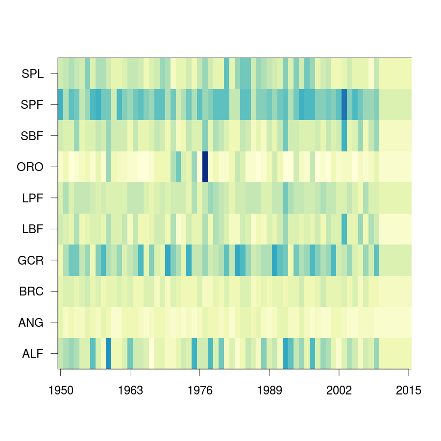

Materials and Methods for the JFRE Atlantis model
Table of Contents
- Installation of Atlantis
- Runing Atlantis
- Zones
- Oceanography
- Setting Atlantis
- CSV files
- PRM files
- Biology input file
- Habitat dependence
- Acidification (Turnned off for calibration)
- Diets
- Whater - Column parameters
- Spatial Distribution
- Spatial Cover
- Throphic relation
- Spawning
- Recruitment
- LFD by cohorts
- Estimation of the mean Weight
- Temperature
- Oxigen
- Extra Mortality
- Bibliography that I need
- Codes
- What is needed
- Resume of the configuration file
- Mortality
- Forcing files
- Biology input file
- Initial conditions file
- Dietary analysis (DNA)
Installation of Atlantis
The basic program an libraries to run Atlantis
Check if is installed
dpkg -l | grep build-essential # Esscential packages to build debian dpkg -l | grep autoconf # Automatic configure script builder dpkg -l | grep subversion # Version Control System (like GITHUB) dpkg -l | grep gawk # GNU version de Awk dpkg -l | grep proj # Program Proj.4 Cartographic projection dpkg -l | grep libxml2-dev # Library for XML lenguaje dpkg -l | grep libnetcdf-dev # Library of development kit for NetCDF dpkg -l | grep flip # convert text file line endings between Unix and DOS
Install and installation check of libraries [7/7]
[X]sudo apt-get install build-essential[X]sudo apt-get install autoconf[X]sudo apt-get install subversion[X]sudo apt-get install libxml2-dev[X]sudo apt-get install libnetcdf-dev[X]sudo apt-get install gawk[X]install proj.4 wget http://download.osgeo.org/proj/proj-4.9.1.tar.gz mkdir ~/proj mv Download/proj-4.9.1.tar.gz ~/proj/ tar -zxvf proj-4.9.1.tar.gz cd proj-4.9.1 sudo ./configure sudo make sudo make install
Installation of Atlantis
Checkout [3/3]
[X]cd /home/demiurgo/Documents/2015/AtlantisModel[X]Checkout Atlantis svn co https://svnserv.csiro.au/svn/atlantis/Atlantis/trunk/[X]Checkout SETas svn co https://svnserv.csiro.au/svn/atlantis/runFiles/trunk/SETas_model_New_Trunk/
Update [2/2]
[X]Update svn update SETasmodelNew svn update trunk[X]If I udate I need to build atlantis again
Build Atlantis [9/9]
[X]cd /home/demiurgo/Documents/2015/AtlantisModel/trunk/atlantis[X]aclocal[X]autoconf[X]automake -a # I have some problems with this section[X]autoreconf -fvi # you can use this instead of the other ones[X]sudo chmod +x configure # Change the permissions to the configure script[X]./configure[X]make[X]sudo make install
Chanche between DOS-mode to UNIX-mode [2/2]
- It is necesary to change the mode of the codification of the text files of the setas folder
[X]cd home/demiurgo/Documents/2015/AtlantisModel/SETasmodelNew[X]flip -uvt .
Runing Atlantis
Nescesary files
[ ]atlantisMerged[ ]initvmpasetas25032013.nc[ ]outputSETAS.nc[ ]VMPAsetasrunfishingFDem.prm[ ]VMPAsetasforcefishDem.prm[ ]VMPAsetasphysics.prm[ ]VMPAsetasbiolfishingDem.prm[ ]VMPAsetasharvestFNew.prm[ ]SETasGroupsDemNoCep.csv[ ]SETasFisheries.csv[ ]outputFolderTrunk
Run the model called the SETas (Unix != DOS)
- atlantisMerged -i initvmpasetas25032013.nc 0 -o outputSETAS.nc -r VMPAsetasrunfishingFDem.prm -f VMPAsetasforcefishDem.prm -p VMPAsetasphysics.prm -b VMPAsetasbiolfishingDem.prm -h VMPAsetasharvestFNew.prm -s SETasGroupsDemNoCep.csv -q SETasFisheries.csv -d outputFolderTrunk
Zones
using Qgis for the definition of the polygos
The polygons are defined by species distribution, managemet areas and Oceanography
The polygons need to have
- Each box must have a "boxid" integer attribute, which must be consecutively numbered, starting from 0. The absence of this attribute, or any gaps in the numbering, cause the transformation to abort.
- Each box must have a "boundary" integer attribute. This should be set to 1 for every boundary box, and 0 otherwise. The absence of this attribute will cause the transformation to abort. It will also abort if box 0 is not marked as a boundary box, or if box 1 is marked as a boundary box. Note: the tool does not at the moment attempt to verify that a boundary box is in fact on the boundary.
- Each box must have a botz float attribute, which will be used in the bathymetry. It may be either negative or positive, but will always be converted to negative. It will also accept "depth" if botz is not found.
- Each box can (read: "should") have a "vertmix" numeric attribute. If it is not present NaN will be used and you will have to add it correct it manually later.
- Each box can (read: "should") have a "horizmix" numeric attribute. If it is not present NaN will be used and you will have to add it correct it manually later.
- Islands should be represented as boxes with a depth of 0, not as empty regions. The conversion will abort if islands are detected.
- File need to looks like
| boxid | Bounday | botz | horizmix | vermix | area |
|---|---|---|---|---|---|
| 0 | 1 | - 4500 | 1 | 0.00000001 | 7945687 |
| 1 | 0 | - 3600 | 1 | 0.00000001 | 45389345 |
| 2 | 1 | - 4500 | 1 | 0.00000001 | 987728 |
I generate a Shape file with the poligons. I need to know:
- Shape file from QGIS
- UTM projection - For Juan Fernandez is UTM 17H South
- check the shp file v.in.ogr "dsn=/home/demiurgo/Documents/2015/Polygonos/qgis-project/JFR.shp" output=JFR0p001 snap=0.0001 minarea=0.0001 -o
- Using the Java lybrarie I need to run the follow code
rm JFREll.bgm java -jar bgmeriser-stripped.jar -as "+proj=longlat +ellps=WGS84 +datum=WGS84 +nodefs" JFREv3.shp JFREll.bgm
rm JFRExy.bgm java -jar bgmeriser-stripped.jar -from "+proj=longlat +ellps=WGS84 +datum=WGS84 +nodefs" -to "+proj=utm +zone=19 +south +ellps=GRS80 +towgs84=0,0,0,0,0,0,0 +units=m +nodefs" JFREv3.shp JFRExy.bgm
Oceanography
I will use the Roms model
The variables that I plan tu use are:
- CHLA
- temperature
- NO3
- w
- Salinity
Getting the physics
Getting the code
- svn co https://svnserv.csiro.au/svn/atlantis/Matlab/hydro/trunk/Public
- I need to use my CSIRO account
Running the code
The layer that I create are based on the biology of the species and in the structure of the BMG file
- the max depth in the model need to be less than the max depth usen in the BMG file
Two steps to get the Oceanography, I'm using one file called roms2atlantis.m who is devided in three part:
- Folders
- codes : '/home/demiurgo/Documents/2015/AtlantisModel/tools/physics/Codes'
- ROMS : '/media/demiurgo/TOSHIBA EXT/DatafisicaAJF/ROMS/avg/**YEAR**'/Parent files
- outputs:
- .mat files : 'home/demiurgo/Documents/2015/Oceanography/physics/output/**YEAR**'/' - .nc files : '/home/demiurgo/Documents/2015/Oceanography/physics/output/Netcdfout'
- Getting the polygos
- It is necesary to call the BMG file to obtatin the information of the polygons, to do this I use the function 'read.boxes'
- To calculate the transpors its necesary to know the faces of the polygos, for that I use the readfaces2 function
- Its Necesary to define the layer depth, in my case and based on Biology and Oceanography I select 8 levels
- Code In matlab
BGM_JFR_ll = '/home/demiurgo/Documents/2015/Oceanography/physics/BMG_files/JFRE_ll.bgm'; [nbox,nface,bid,cent,b_area,verts,iface, botz] = read_boxes(BGM_JFR_ll); [nulr,nupt1,nupt2] = read_faces2(nbox, nface, bid,verts, iface, BGM_JFR_ll); iface = iface; %% Id of the faces lr = nulr; %% Neightbourn Layers pt1 = nupt1; %% Face 1 pt2 = nupt2; %% Face 2 irealfaces = find(~isnan(nupt1(:,1))); % (ie those ref'd in box definitions) fcid = (irealfaces-1); rimn = 10; % default 3 is probably too few dinc = 1; %% 0.1; % default 10km is probably ok, esp for large boxes % May want to reduce the face integration step 'dinc' for models with % small or narrow boxes. dlev = [0 20 50 150 250 400 650 1000 4300]; %% This structure is related with % the biology and with the % maximum deph in the BMG model
- Functions
- readboxes()
- readfaces2()
- transportJFRE()
- netcdf() # NETCDF library
- sigma2zeta() # Depth at sigma layer based in the maximum depth
- cart2pol() # cartesian to polar (cilindrical) coordinates
- cosd() # cosine in degree
- av2() # grid average
- rot2d() # Rotate vectors by geometrics angle
- Generic functions from matlab
- writetransfile()
- boxavJFRE
- netcdf()
- sigma2zeta()
- writeavvar()
- Getting the transport
- I transform the transport in sigma layers to the depth layer in the JFRE polygons
- I devided the transport by years
- The function transportJFRE it a bit hardcoded
- The output ist a netcd file
- Code
%% Running the model - saving by years %% %% Transport between layers for year = 2000 : 2008 direc = (['/media/demiurgo/TOSHIBA EXT/Data_fisica_AJF/ROMS/avg/', num2str(year), '/']); files = dir([direc, 'nest_avg_parent.*']); guard = (['/home/demiurgo/Documents/2015/Oceanography/physics/output/Netcdf_out/JFRE_Transport', num2str(year), '.nc']); cd (['/home/demiurgo/Documents/2015/Oceanography/physics/output/', num2str(year),'/']); for nfile = 1 : length(files) fnm = [direc, files(nfile).name]; [T, nctime] = transport_JFRE(verts, pt1, pt2, dlev, dinc, rimn, nfile, year, fnm); end t_files = dir('*third_Step.mat'); for f = 1 : length(t_files) load(t_files(f).name) if f == 1 Tfinal = T; nctime = tims; else Tfinal = cat(2, Tfinal, T); nctime = cat(1, nctime, tims); end end save('Tfinal.mat', 'Tfinal', 'nctime'); % writing the NETCDF file write_trans_file(pt1, pt2, lr, nctime, Tfinal, fcid, guard) end #+end_#+begin_src language
- Getting variables
- To variables stracted are the mean by layer and by polygons
- the variables were saved by year
- The output ist a netcd file
- Code
- Base code
varn = {'temp'; 'salt'; 'w'; 'CHLA'; 'NO3'} for v = 1 : length(varn) for year = 2000 : 2008 avname = char(varn(v)); direc = (['/media/demiurgo/TOSHIBA EXT/Data_fisica_AJF/ROMS/avg/', num2str(year), '/']); files = dir([direc, 'nest_avg_parent.*']); guard = (['/home/demiurgo/Documents/2015/Oceanography/physics/output/Netcdf_out/JFRE_', num2str(year), avname, '.nc']) cd (['/home/demiurgo/Documents/2015/Oceanography/physics/output/', num2str(year),'/']) for nfile = 1 : length(files) fnm = [direc, files(nfile).name]; box_av_JFRE(verts, avname, dlev, nfile, year, fnm) end t_files = dir(['*', avname, '_JFRE.mat']); for f = 1 : length(t_files) load(t_files(f).name) if f == 1 Av_final = Var_avg; nctime = tims; else Av_final = cat(2, Av_final, Var_avg); nctime = cat(1, nctime, tims); end end file.save = ([num2str(year), '_Av_', avname, '.mat']) save(file.save, 'Av_final', 'nctime') % writing the NETCDF file write_av_var(nctime, bid, avname, Av_final, guard) end end #+end_#+begin_src language
Using Hydrocontruct
Getting the code
Installing Hydro under ubuntu
- nescesary dev files for ubuntu
- sudo apt-get install libcunit1-dev
- autotools for build and compile
- aclocal
- autoheader
- autoconf
- automake -a
- ./configure
- make
- sudo make install
running hydrocontruct
- Setting hydrocontruct
- For this you need to use the .prm, this file contain all the settings
- be careful to use the layer thikness and not the comulative depth
# Message level setting: 0 = no messages, 1 = step-by-step # reporting on program progress verbose 0 # read back exchanges per box verbose_exchange 0 verbose_box 0 # read back dates used to pad out the timeseries verbose_pad 0 ## General characteristics for flows # use unidirectional flows (so negative flow from A to B recast as positive flow from B to A) # either setting ok if flows reporting as net flow across faces, but if have gross flows set to 0 unidirectional_flow 0 # rewind file between reading lines (0=no which is faster, 1=yes which is safer) rewind 1 # Generic code used (1) or hardwired read in (0) generic 1 # Geometry file being used by boxmodel geofile JFRE_xy.bgm # File with lat-long coordinates of the faces in it - only really needed if using netcdf input data llgeofile JFRE_ll.bgm # Recycle flows through time recycle_flow 0 # Slow diffusion (0 flows replaced by 0.0000001 flows) allowed (0=no, 1=yes) slow_diffusion 0 # Assumed vertical diffusion allowed (0=no, 1=yes) vert_diffusion 0 # Assumed (minimal) back diffusion allowed (0=no, 1=yes) back_diffusion 0 # Reference year - exchanges etc are referenced from 07-01-2000 (MM-DD HH:MM:SS) of this year reference_year 2000 # Start time of output file (days) starts on the 07-Jan-2000 11:48:16 tstart 0 # End time of output file (days) ends on the 30-Dec-2008 12:22:24 tstop 656 # Time step of the output file (seconds) <=> 5 days dt 432000 # Reset time so start at time zero rather than t = .... in file reset_time 1 # Total (maxiumum) number of water column layers wcnz 8 # Default water column layer thickness default_layer_dz 8 20 30 100 100 150 250 350 3300 # Number of water column layers per box numlayers 51 8 8 8 8 8 8 8 8 8 8 8 8 8 8 8 8 8 8 8 8 8 8 8 8 8 8 8 8 6 6 6 6 6 6 6 4 4 4 4 8 8 4 4 4 4 0 6 6 0 6 5 # Boundary flag and boundary type (0 = non-boundary, 1 = normal boundary, 2 = absorptive, 3 = reflective) boundaries 51 1 0 1 1 1 0 0 0 0 0 0 0 0 0 0 0 0 0 0 0 0 0 0 0 0 0 0 0 0 0 0 0 0 0 0 0 0 0 0 0 0 0 0 0 0 1 0 0 1 0 0 # In addition to any scaling below, flows are area corrected to try and avoid hyperdiffusion (0 = no, 1 = yes, 2 = yes, with respect to the shape of the box) area_correct_flow 1 area_correct_vflow 0 # Scaling of flow per box (e.g. -1.0 to reverse flows) box_scaling 51 1 1 1 1 1 1 1 1 1 1 1 1 1 1 1 1 1 1 1 1 1 1 1 1 1 1 1 1 1 1 1 1 1 1 1 1 1 1 1 1 1 1 1 1 1 1 1 1 1 1 1 ## Horizontal flow information # Number of destination cells ndest 204 # Missing data value (flows < than -(this value) will be ignored) missing_data -9999999999 # Number of data entries per line n_inline 1 # Data type (0 = Al Herman NOAA format, 1 = CSIRO flat format, 2 = CSIRO netcdf format) input_type 2 # Units for flow data (0 = Sverdrups, 1 = m3/s) unit_type 1 # Number output files numoutfile 1 ## Hydrodynamic files nhdfiles 1 trans0.name JFRE_Transport.nc # Number of faces representing estuaries where need to "by hand" specify flows num_estuaries 0 # Estuarine face ids (face numbers in geofile that define estuary mouth) - must have as many entries as specified by num_estuaries # or at least 1 entry, which ever is smaller river_ids 1 0 # Estuarine fluxes - must have as many entries as specified by num_estuaries # or at least 1 entry, which ever is smaller. Rates must be in the same units as in the raw data files river_influxes 1 0 river_outfluxes 1 0 ## Vertical exchange files nvhdfiles 0 vtrans0.name JFRE_2000v.nc ## Temperature and Salinity file information # Temperature missing data values (temperatures < than -(this value) will be ignored) temp_missing_data 1 # Salinity missing data values (salinities < than -(this value) will be ignored) salt_missing_data 1 # Flag indicating whether absolute values or fluxes of temperature and salinity used # (0 = absolute values, 1 = fluxes added to init values, 2 = fluxes summed) tsflagflux 0 # Temperature and salinity profile files ntsfiles 1 tempsalt0.name JFRE_Variables.nc pad_time 0 ph_missing_data 0
- running hydrocontruc
#!/bin/bash sudo make install -C /home/demiurgo/Documents/2015/Oceanography/physics/Codes/Contruct/HydroConstruct/trunk/ if [ $? -eq 0 ] ; then #valgrind --leak-check=full --log-file=Valgrind.%p --show-reachable=yes #gdb --args HydroConstruct -f flowout.cdf -t tempout.cdf -s saltout.cdf -r parameters.prm mkdir Salida_Atlantis mv saltout.cdf Salida_Atlantis mv tempout.cdf Salida_Atlantis mv flowout.cdf Salida_Atlantis/flowout.cdf mv volume1.cdf Salida_Atlantis/volume.cdf cd Salida_Atlantis ncgen -o JFRE_temp.nc tempout.cdf ncgen -o JFRE_salt.nc saltout.cdf ncgen -o JFRE_hydro.nc flowout.cdf cd .. else echo 'Failed to compile hydro construct' fi
physics parameter file
- Settings of the Oceanography file
Parameters used in Atlantis Parameter Original Value Atlatnis value Reference Comment All for SEdiment Atlantis default Atlantids defaul Beth I kept the same values. I will calibrate the ecology first eddy seasons 1 Use calculated values oceano.tools It important to check the same result than andrade, for the spring increase of cholrofila eddy vertmix 0 0 Beth It is necesary to change to 1 to represnet the effect of the eddies other parameter No-variation Same than atlantis
- nw——
Setting Atlantis
CSV files
SETasfishery
Bycatch
- It is necesary put the bycatch species in the model as a fisheries?
- The Dynamic can be compelte different if we dont take into account this factor
Fisheries
- Configuration of the Fisheries parameter files
Parameter used in the configuration of the fisheries parameter files Code Index Name IsRec NumSubFleets trapSPL 1 trap spiny lobster 0 0 trapGCR 2 trap golden crab 0 0 llBRC 3 long line breca 0 0 trawORO 4 trwal orange roughy 0 0 trawALF 5 trawl alfonsino 0 0 llLPF 6 long line large pelagic fish 0 0 hlineLPF 7 hand line Large pelagic fish 0 0 recVID1 8 recreational Vidriola 1 0 recLPF1 8 recreational large pelagic fish 1 0 hlineSPF 9 hand line small pelagic fish 0 0 llSBF 10 long line small benthic fish 0 0 trapLBF 11 Trap large benthic fish 0 0 llLBF 12 Trap large benthic fish 0 0 Footnotes:
1 Recreational fisheries with spears only in summer
SETasGroups
Functional groups
| Code | Functional Groups | Common name | Sc. Name | |
|---|---|---|---|---|
| SPL | Langosta | Langosta de J.F. | Jasus frontalis | |
| GCR | Cangrejo Dorado | Cangrejo Dorado | Chaceon chilensis | |
| BRC | Breca | Breca | Nemadactylus gayi | |
| ANG | Anguila | Anguila | Gymnothorax porphyreus | |
| VID | Vidriola | Vidriola | Seriola lalandi | |
| ALF | Alfonsino | Alfonsino | Beryx splendens | |
| ORO | Orange Roughy | Orange Roughy | Hoplostethus atlanticus | |
| OCT | Pulpo | Pulpo de J.F. | Octopus crusoe | |
| CHO | Chondricties | Tollo | Squalus mitsukuri | |
| OTA | Otaridee | Lobo de J.F. | Actocephalus phillippi | |
| SPF | Small Pelagic Fish | Pampanito | Scorpis chilensis | |
| Graniento | Caprodon longimanus | |||
| LPF | Large Pelagic Fish | Corvina de J.F. | Umbrina reedi | |
| Jurel de J.F. | Pseudocaranx chilensis | |||
| Sierra | Thyrsites atun | |||
| SBF | Small Benthic Fish | Colorado | Plectranthias exsul | |
| Cabrilla | Chironemus delfini | |||
| Chancharro | Helicolenus lengerichi | |||
| Pez Mariposa | Pterygotrigla picta | |||
| Jerguilla de J.F. | Girella albostriata | |||
| LBF | Large Benthic Fish | Bacalado de J.F. | Polyprion oxigeneios fernandezianus | |
| Lenguado | Paralichthys fernandezianus | |||
| Congrio | Lotella fernandeziana | |||
| MOL | Mollusca | Caracol blanco | Fusitritron magellanicum | |
| Ostra | Nucula fernandeziana | |||
| Loco | Concholepas sp | |||
| SCR | Small Crustacean | Centolla de J.F. | Paraloma rathbuni | |
| Jaiva | Talifrus dentatus | |||
| SUR | Sea Urchin | Erizo | Centrostephanus rodgersii | |
| Estrella de mar | Patiriella calcarata |
JFREbiol.csv file configuration
| Code | Index | IsTurnedOn | Name | Long Name | NumCohorts | NumGeneTypes | NumStages | NumSpawns | NumAgeClassSize | NumStocks | MovesVertically | MovesHorizontally | isFished | IsImpacted | isTAC | GroupType | isPredator | IsCover | isSiliconDep | isAssessed | IsCatchGrazer | isOverWinter | isCultured | isHabDepend |
|---|---|---|---|---|---|---|---|---|---|---|---|---|---|---|---|---|---|---|---|---|---|---|---|---|
| SPL | 0 | 1 | Spinylobster | Spiny lobster | 10 | 1 | 2 | 1 | 4 | 2 | 0 | 1 | 1 | 1 | 0 | FISHINVERT | 1 | 0 | 0 | 1 | 0 | 0 | 0 | 0 |
| GCR | 1 | 1 | GoldenCrab | Golden Crab | 10 | 1 | 2 | 1 | 4 | 2 | 0 | 1 | 1 | 1 | 0 | FISHINVERT | 1 | 0 | 0 | 1 | 0 | 0 | 0 | 0 |
| BRC | 2 | 1 | Breca | Breca | 10 | 1 | 2 | 1 | 2 | 2 | 1 | 1 | 1 | 1 | 0 | FISH | 1 | 0 | 0 | 0 | 0 | 0 | 0 | 0 |
| VID | 3 | 1 | Vidriola | Vidriola | 3 | 1 | 2 | 1 | 2 | 1 | 1 | 1 | 1 | 1 | 0 | FISH | 1 | 0 | 0 | 0 | 0 | 0 | 0 | 0 |
| ORO | 4 | 1 | OrangeRoughy | Orange Roughy | 10 | 1 | 2 | 1 | 15 | 1 | 1 | 1 | 1 | 1 | 1 | FISH | 1 | 0 | 0 | 1 | 0 | 0 | 0 | 0 |
| ALF | 5 | 1 | Alfonsino | Alfonsino | 10 | 1 | 2 | 1 | 2 | 1 | 1 | 1 | 1 | 1 | 1 | FISH | 1 | 0 | 0 | 1 | 0 | 0 | 0 | 0 |
| ANG | 6 | 1 | Anguila | Anguila | 10 | 1 | 2 | 1 | 4 | 1 | 1 | 1 | 1 | 1 | 0 | FISH | 1 | 0 | 0 | 0 | 0 | 0 | 0 | 0 |
| CHO | 7 | 1 | Chondrichtyans | Chondrichtyans | 1 | 1 | 2 | 1 | 1 | 1 | 1 | 1 | 0 | 1 | 0 | SHARK | 1 | 0 | 0 | 0 | 0 | 0 | 0 | 0 |
| OTA | 8 | 1 | Otariid | Otariid | 10 | 1 | 2 | 1 | 3 | 2 | 1 | 1 | 0 | 1 | 0 | MAMMAL | 1 | 0 | 0 | 1 | 0 | 0 | 0 | 0 |
| DOL | 9 | 1 | Dophins | Dophins | 1 | 1 | 2 | 1 | 1 | 1 | 1 | 1 | 0 | 0 | 0 | MAMMAL | 1 | 0 | 0 | 0 | 0 | 0 | 0 | 0 |
| CET | 10 | 1 | Whales | Whales | 1 | 1 | 2 | 1 | 1 | 1 | 1 | 1 | 0 | 0 | 0 | MAMMAL | 1 | 0 | 0 | 0 | 0 | 0 | 0 | 0 |
| BIR | 11 | 1 | Birds | Birds | 1 | 1 | 1 | 1 | 1 | 1 | 1 | 1 | 0 | 0 | 0 | BIRD | 1 | 0 | 0 | 1 | 0 | 0 | 0 | 0 |
| OCT | 12 | 1 | Octupus | Octupus | 1 | 1 | 1 | 1 | 1 | 1 | 1 | 1 | 0 | 1 | 0 | CEP | 1 | 0 | 0 | 0 | 1 | 0 | 0 | 0 |
| LPF | 13 | 1 | PelagicLfish | Large pelagic fish | 10 | 1 | 2 | 1 | 4 | 1 | 1 | 1 | 1 | 1 | 0 | FISH | 1 | 0 | 0 | 0 | 0 | 0 | 0 | 0 |
| SPF | 14 | 1 | PelagicSfish | Small pelagic fish | 10 | 1 | 2 | 1 | 1 | 1 | 1 | 1 | 1 | 1 | 0 | FISH | 1 | 0 | 0 | 0 | 0 | 0 | 0 | 0 |
| SBF | 15 | 1 | BenthicSfish | Small benthic fish | 10 | 1 | 2 | 1 | 2 | 1 | 1 | 1 | 1 | 1 | 0 | FISH | 1 | 0 | 0 | 0 | 0 | 0 | 0 | 0 |
| LBF | 16 | 1 | BenthicLfish | Large benthic fish | 10 | 1 | 2 | 1 | 3 | 1 | 1 | 1 | 1 | 1 | 0 | FISH | 1 | 0 | 0 | 0 | 0 | 0 | 0 | 0 |
| SZO | 17 | 1 | Smallzooplankton | Small Zooplankton | 1 | 1 | 1 | 1 | 1 | 1 | 1 | 1 | 0 | 0 | 0 | MEDZOO | 1 | 0 | 0 | 0 | 0 | 0 | 0 | 0 |
| MZO | 18 | 1 | Medzooplankton | Medium Zooplankton | 1 | 1 | 1 | 1 | 1 | 1 | 1 | 1 | 0 | 0 | 0 | MEDZOO | 1 | 0 | 0 | 0 | 0 | 0 | 0 | 0 |
| LZO | 19 | 1 | Largezooplankton | Large Zooplankton | 1 | 1 | 1 | 1 | 1 | 1 | 1 | 1 | 0 | 0 | 0 | LGZOO | 1 | 0 | 0 | 0 | 0 | 0 | 0 | 0 |
| SCR | 20 | 1 | Smallcrus | Small crustaceans | 1 | 1 | 1 | 1 | 1 | 1 | 0 | 0 | 0 | 1 | 0 | MOBEPOTHER | 1 | 0 | 0 | 0 | 0 | 0 | 0 | 0 |
| BFF | 21 | 1 | Depositfeeders | Deposit feeders | 1 | 1 | 1 | 1 | 1 | 1 | 0 | 0 | 0 | 1 | 0 | LGINF | 1 | 0 | 0 | 0 | 0 | 0 | 0 | 0 |
| LPH | 22 | 1 | Largephyto | Large phytoplankton | 1 | 1 | 1 | 1 | 1 | 1 | 0 | 0 | 0 | 0 | 0 | LGPHY | 0 | 0 | 0 | 0 | 0 | 0 | 0 | 0 |
| SPH | 23 | 1 | Smallphyto | Small phytoplankton | 1 | 1 | 1 | 1 | 1 | 1 | 0 | 0 | 0 | 0 | 0 | SMPHY | 0 | 0 | 0 | 0 | 0 | 0 | 0 | 0 |
| SUR | 24 | 1 | Seaurchins | Sea urchins | 1 | 1 | 1 | 1 | 1 | 1 | 0 | 0 | 0 | 0 | 0 | SEDEPFF | 1 | 0 | 0 | 0 | 0 | 0 | 0 | 0 |
| MOL | 25 | 1 | Mollusca | Mollusca | 1 | 1 | 1 | 1 | 1 | 1 | 0 | 0 | 0 | 0 | 0 | SEDEPFF | 1 | 0 | 0 | 0 | 0 | 0 | 0 | 0 |
| NO | 26 | 1 | Nitrate | Nitrate | 1 | 1 | 1 | 1 | 1 | 1 | 0 | 0 | 0 | 0 | 0 | NIT | 0 | 0 | 0 | 0 | 0 | 0 | 0 | 0 |
| MA | 27 | 1 | Macroalgae | Macroalgae | 1 | 1 | 1 | 1 | 1 | 1 | 0 | 0 | 0 | 0 | 0 | PHYTOBEN | 0 | 1 | 0 | 0 | 0 | 0 | 0 | 0 |
| PB | 28 | 1 | PelagBact | Pelagic Bacteria | 1 | 1 | 1 | 1 | 1 | 1 | 0 | 0 | 0 | 0 | 0 | PLBACT | 0 | 0 | 0 | 0 | 0 | 0 | 0 | 0 |
| BB | 29 | 1 | SedBact | Sediment Bacteria | 1 | 1 | 1 | 1 | 1 | 1 | 0 | 0 | 0 | 0 | 0 | SEDBACT | 0 | 0 | 0 | 0 | 0 | 0 | 0 | 0 |
| DL | 30 | 1 | Labiledetritus | Labile detritus | 1 | 1 | 1 | 1 | 1 | 1 | 0 | 0 | 0 | 0 | 0 | LABDET | 0 | 0 | 0 | 0 | 0 | 0 | 0 | 0 |
| DR | 31 | 1 | Refractorydetritrus | Refractory detritrus | 1 | 1 | 1 | 1 | 1 | 1 | 0 | 0 | 0 | 0 | 0 | REFDET | 0 | 0 | 0 | 0 | 0 | 0 | 0 | 0 |
| DC | 32 | 1 | Carrion | Carrion | 1 | 1 | 1 | 1 | 1 | 1 | 0 | 0 | 0 | 0 | 0 | CARRION | 0 | 0 | 0 | 0 | 0 | 0 | 0 | 0 |
Information functional groups
- lifespans
- Whit this I set the number of cohorts and the number of Ageclass
FG Maximum Age (years) Mat (years) Cohort AgeClasses Ref SPL 40-50 8 10 4 Simulation model GCR 40 8 10 4 Other species BCR 30 5 10 3 Estimation VID 12 2 3 2 fishbase ORO 149 33 10 15 Fishbase ALF 23 5 10 2 Fishbase ANG 38 7 10 4 Fishbase OTA 30 3 10 3 ANNALISA BERTA 1989 LPF 40 4 10 4 Fishbase SPF 10 3 10 1 Fishbase SBF 24 4 10 2 Fishbase LBF 30 3 10 3 Fishbase
- Whit this I set the number of cohorts and the number of Ageclass
- Growth and Age
- Orange Roughy
- Male
Source N-sample Age Range length type Linf K to FIP 2000-12 1516 Fork 47.86 0.0374 -1.414 1516 Standar 43.68 0.0372 -1.639 - Female
Source N-sample Age Range length type Linf K to FIP 2000-12 1554 Fork 53.8 0.0304 -1.691 1554 Standar 49 0.0303 -1.973 - Both sex
Source N-sample Age Range length type Linf K to FIP 2000-12 1890 Fork 52.13 0.0313 -1.716 1890 Standar 47.51 0.0303 -2 - Re-contruction of grwoth curves
## ~~~~~~~~~~~~~~~~~~~~~~~~~~~~~~~~~~~~~~~~~~~~~~~~~~~~~~~~~~~~~~ ## ## ~ von Bertalanffy growth equation ~ ## ## ~~~~~~~~~~~~~~~~~~~~~~~~~~~~~~~~~~~~~~~~~~~~~~~~~~~~~~~~~~~~~~ ## library(ascii) options(asciiType="org") ## function vb <- function(linf, k, to, age){ l <- linf * (1 - exp(-k * (age - to))) return(l) } ## the configuration for Orange roughy is 10 cohort of 10 age class ## estimation based on paramter from Edwin report Age <- seq(from = 1, to = 149, length = 10) l <- vb(linf = 52.13, k = 0.0313, to = -1.716, age = Age) out <- data.frame(Age = round(Age, 0), Fork.Length = l) b <- ascii(out, header = T, include.rownames = FALSE, include.colnames = T) print(b)
Age growth relationship Age Fork.Length 1.00 4.25 17.00 23.51 34.00 35.03 50.00 41.91 67.00 46.02 83.00 48.48 100.00 49.95 116.00 50.83 133.00 51.35 149.00 51.66
- Male
- Alfosino
- Male
Source N-sample Age Range length type Linf K to FIP 2000-12 671 1-15 Fork 58.54 0.106 -2.393
- Male
- Female
Source N-sample Age Range length type Linf K to FIP 2000-12 706 1-19 Fork 63.59 0.095 -2.458
- Both sex
Source N-sample Age Range length type Linf K to FIP 2000-12 1377 1-19 Fork 63.39 0.0928 -2.567 - Re-contruction of grwoth curves
## ~~~~~~~~~~~~~~~~~~~~~~~~~~~~~~~~~~~~~~~~~~~~~~~~~~~~~~~~~~~~~~ ## ## ~ von Bertalanffy growth equation ~ ## ## ~~~~~~~~~~~~~~~~~~~~~~~~~~~~~~~~~~~~~~~~~~~~~~~~~~~~~~~~~~~~~~ ## library(ascii) options(asciiType="org") ## function vb <- function(linf, k, to, age){ l <- linf * (1 - exp(-k * (age - to))) return(l) } ## the configuration for Alfonsino is 10 cohort ## estimation based on paramter from Edwin report Age <- seq(from = 1, to = 19, length = 10) l <- vb(linf = 63.39, k = 0.0928, to = -2.567, age = Age) out <- data.frame(Age = round(Age, 0), Fork.Length = l) b <- ascii(out, header = T, include.rownames = FALSE, include.colnames = T) print(b)
Growth Alfonsino Age Fork.Length 1.00 17.86 3.00 25.58 5.00 31.98 7.00 37.30 9.00 41.72 11.00 45.39 13.00 48.44 15.00 50.97 17.00 53.08 19.00 54.82
- Orange Roughy
- Growth-Weight
- Orange Roughy
- Male
Source N-sample Winf K to FIP 2000-12 1516 3180.6 0.0130 1.745 - Female
Source N-sample Winf K to FIP 2000-12 1554 4989.9 0.0091 1.925 - Both sex
Source N-sample Linf K to FIP 2000-12 1890 4956.9 0.008 2.064
- Male
- Orange Roughy
- Natural mortality (M)
- Orange Roughy
Source Sex Value FIP 2000-12 Male 0.053 Female 0.047 - Alfonsino
Source Sex Value FIP 2000-12 Male 0.162 Female 0.152
- Orange Roughy
PRM files
Biology input file
Habitat dependence
- The species that are cover are Coral and Macroalgae. Those are been reported that act as cover for juvenile lobster and juvenile bonny fishes.
| FG | Stage | Kcov | Bcov | Acov |
|---|---|---|---|---|
| SPL | Both | 3 | 0.6 | 1 |
| GCR | Both | 3 | 0.6 | 1 |
| BRC | Juv | 3 | 0.6 | 1 |
| LPF | Juv | 3 | 0.6 | 1 |
| SPF | Both | 3 | 0.6 | 1 |
| SBF | Both | 3 | 0.6 | 1 |
| LBF | Juv | 3 | 0.6 | 1 |
Acidification (Turnned off for calibration)
- Effect of ph in crustacean and other species.
- Acidification at the moment is settle to 1 (line 770)
- There is effect on behavior in other species of crustacean
FG Temp Ph fecund Predation SPL 1 1 1 1 GCR 1 1 1 1 COR 1 1 SCR 1 1 1 1 MOL 1 1 SZO 1 1 MZO 1 1 LZO 1 1
- There is effect on behavior in other species of crustacean
Diets
| FG | Species | Reference |
|---|---|---|
| SPL | Jasus lalandii | van Zyl et al. 1998 |
| Jasus lalandii | Haley et al. 2011 | |
| Jasus edwearsii | Connell et al. 2014 | |
| Jasus edwardsii | Thesis Stewart gave me | |
| Jasus edwardsii | O'Rorke et al. 2014 | |
| GCR | Chaceon notialis | Fishbase |
| Chaceon quinquedens | Fishbase | |
| Chaceon ramosae | Fishbase | |
| BRC | Nemadactilys gayi | Ramirez et al. 2013 |
| Nemadactilys gayi | Ernst 2015 | |
| VID | Seriola lalandi | Vergani et al, 2008 |
| Seriola lalandi | fishes of australia | |
| ORO | Hoplostethus atlanticus | Niklitschek 2009 |
| Hoplostethus atlanticus | Labe and Arana 2001 | |
| Hoplostethus atlanticus | Fishbase | |
| Hoplostethus atlanticus | Bulman and Kislow 1992 | |
| Hoplostethus atlanticus | Dunn and Forman 2011 | |
| ALF | Beryx splendens | Horn et al. 2010 |
| Beryx splendens | Fishbase | |
| Beryx splendens | Durn and Gonzalez 2002 | |
| ANG | Lycodontis porphyreus | Pizarro and Tiffou 1974 |
| Gymnothorax vicinus | Young and Winn, 2003 | |
| CHO | Deep sea Squalus | Dunn and Ferman 2011 |
| Squalus fernandinus | Arana 1974 | |
| Squalus mitsukurii | Fishbase | |
| Squalus mitsukurii | Cortes, 1999 | |
| OTA | Arctocephalus philippii | Osman 2008 |
| Arctocephalus philippii | Ecua and Francis 1995 | |
| Arctocephalus philippii | Diaz 2007 | |
| DOL | Delphinus delphis | Pusineri et al. 2007 |
| Delphinus delphis | Fishbase | |
| Tursiops truncatus | Fishbase | |
| Globicephala macrorhynchus | Fishbase | |
| Delphinus delphis | Brophy et al. 2006 | |
| CET | Orcinus Orca | Ford et al 2016 |
| Orcinus orca | Ford et al. 1998 | |
| Kogia breviceps | West et al. 2009 | |
| Kogia breviceps | Beatson 2007 | |
| Balaenoptera physalus | Landy et al 1991 | |
| Balaenoptera physalus | Fishbase | |
| Balaenoptera musculus | Fishbase | |
| BIR | Puffinus cretopus | Azocar et al. 2013 |
| SQD | Dosidicus gigas | Fishbase |
| vampyroteuthis infernalis | Fishbase | |
| OCT | Octopus crusoe | Petit et al 2015 |
| Octopus mimus | Fishbase | |
| Enteroctopus megalocyathus | Ibanez and Chong 2008 | |
| Octopus vulgaris | Smith 2003 | |
| LPF | Psudocaranx chilensis | Ramirez et al 2013 |
| Psudocaranx chilensis | Fishbase | |
| SPF | Malapterus reticulatus | Petit, 2014 |
| Scorpix chilensis | Ramirez et al 2013 | |
| Malapterus reticulatus | Ramirez et al 2013 | |
| Scartichthys variolatus | Diaz and Munoz 2010 | |
| Thyrsites atun | Fishbase | |
| Callanthias sp. | Fishbase | |
| SBF | Hipoplectrodes semicinctum | Ramirez et al 2013 |
| Plectranthias sp | Fishbase | |
| Aseraggodes sp. | Fishbase | |
| Girella albostriata | Fishbase | |
| Myctophidae | Fishbase | |
| LBF | Polyprion oxygeneios | Pizarro and Tiffou 1974 |
| Aserragodes macleayanus | Sumpton et al. 1990 | |
| Polyprion oxygeneios | Fishbase | |
| Paralabrax sp. | Fishbase | |
| Paralichthys sp. | Fishbase | |
| SZO | microzooplankton | Calbet et al. 2008 |
| Microzooplankton | Burian et al. 2013 | |
| MZO | Mesozooplankton | Baten et al. 2001 |
| Mesozooplankton | Bode et al. 2004 | |
| Mesozooplankton | Wu et al. 2010 | |
| Mesozooplankton | Motwani et al. 2013 | |
| LZO | Euphausiid | Antezana, 2010 |
| SCR | Projasus bahamondei | Arana, 2014 |
| Paromola cuviieri | Fishbase | |
| Chaceon quinquedens | Steimle et al. 2001 | |
| Ovalipes trimaculatus | Fishbase | |
| BFF | Polychaete | Jumars et al. 2015 |
| MOL | Acanthopleura | Camus et al. 2012 |
| Concholepas concholepas | Stotz et al. 2003 | |
| Arca sp. | Fishbase | |
| Aplysia sp. | Fishbase | |
| BCA | Sea Urchin | Fishbase |
| Actinidae | Fishbase | |
| COR | Deep waters coral | Kiriakoulakis 2005 |
Whater - Column parameters
- Light penetration through the water column
- Ask Caly abouyt this
Spatial Distribution
- Horizontal distribution
- Spatial distribution juvenile and adult (case of jurelilo-jurel)
- For crustacean I used as division the maturity
Size at maturity for some functional groups FG Size at maturity (mm) Reference SPL 73.2 Average (Rob + Selk) Data Base GCR 106.2 Ernst 2013 report BCR 282 Thesis Ribara 2012 - To use the information by weight I use the mean weight in the catches
Mean catch wight for some functional groups Functional Group Mean weight (g) Reference Octopus 723 Arancibia 2005 Breca 746 Database Anguila 1013 Database
- For crustacean I used as division the maturity
- Distribution by zone
- Orange Roughy
Distribution of Orange Roughy based on Nicklitschek 2007 (evaluacion hidroacustica alfonsino y orange) Zone 2003 2004 2005 2006 Average Zones Atlantis JF1 2196 2019 9590 3749 4388 31,32,33,34 JF2 7246 6062 2847 2201 4589 30 JF3 4536 1905 1531 1565 2384 29 JF4 2981 1572 1586 492 1657 28 BO1 927 1813 1370 50 BO2 654 536 595 49 Total 16959 13139 17903 8007 - Alfonsino
Distribution of Orange Roughy based on Nicklitschek 2007 (evaluacion hidroacustica alfonsino y orange). And proportion of Juvenile in the Catches Zone 2005 2006 S1 S2 S3 S4 Average Zones atlantis JF1 7608 11258 0.2196886 0.1952695 0.3574357 0.6673667 9433 31,32,33,34 JF2 10646 3112 0.05960596 0.05575558 0.42050872 0.96729673 6879 30 JF4 181 203 0.1396473 0.4303930 0.3107811 0.570357 192 28 JF6 3352 0.1396473 0.2271394 0.19006901 0.07640764 3352 47 Total 18435 17925 - Chondricties
Distribution of Chondricties base on Andrade 2007 and 2008 biodiversity of seamount Zone N/Presence Zones Reference JF1 10 31,32,33,34 Yaez et al JF2 1 30 JF3 Presence 29 Andrade et al 2008 JF4 Presence 28 Andrade et al 2008 Robinson Presence 35,36,37,38 Arana 2000 Selkirk Presence 41,42,43,44 Arana 2000 - Cetaceus
- Information from Aguayo et al 1998. I use the map provided in the manuscript as a proxi for the spatial location
- Estimation General
##-----------------------------------------# ## obtener los limites de las capturas # ##-----------------------------------------# source('/home/demiurgo/Documents/PhD/Atlantis_Model/tools/General_tools/Atlantis_tools.R') poly <- read.poly('/home/demiurgo/Documents/PhD/Polygonos/Map/Polygons_20170510.csv') ## Reading data lc <- read.csv('/home/demiurgo/Documents/PhD/Functional_groups/location/Total/Distribution.csv') centroids <- read.csv('/home/demiurgo/Documents/PhD/Functional_groups/location/Cover/centroids.csv') lc[which(lc[, 6] == 0), 6] <- 1 # Replace zeros by ones lc[which(is.na(lc[, 6])), 6] <- 1 # Replace zeros by ones lc[, 6] <- ceiling(lc[, 6]) # Rounding lc <- lc[- which(lc[, 5] < 30), ] # Removing Desventuradas lc <- lc[- which(is.na(lc[, 4])), ] # Removing Lat and lon ##~ FUNCTIONAL GROUPS lc <- FG(data = lc, column = 2) ##~ Weight to number lc <- WtoN(lc, 6, 9, 7) ##------------------------------- ## Divide by functional group ## And by seasonal station ##------------------------------- ## By season lc$season.vat <- with(lc, ifelse(Month %in% c(1,2,3), 1, ifelse(Month %in% c(4, 5, 6), 2, ifelse(Month %in% c(7,8,9), 3, 4)))) ## Relocate the point inside the island to the closest polygons lon <- as.matrix(poly$coor[, c(seq(from = 1, to = dim(poly$coor)[2], by = 2))]) lat <- as.matrix(poly$coor[, c(seq(from = 2, to = dim(poly$coor)[2], by = 2))]) points <- cbind(-lc$Lon, -lc$Lat) for(island in c(49, 46)){ is.poly <- na.omit(cbind(lon[order(poly$attrib$box_id), ][island,], lat[order(poly$attrib$box_id), ][island,])) points <- move.point(points, centroids, is.poly) } lc$Lon <- -points[, 1] lc$Lat <- -points[, 2] ## Split by FG lc.FG <- split(lc, lc$FG) ## Distribution by polygon lon <- as.matrix(poly$coor[, c(seq(from = 1, to = dim(poly$coor)[2], by = 2))]) lat <- as.matrix(poly$coor[, c(seq(from = 2, to = dim(poly$coor)[2], by = 2))]) poly <- by.pol(poly, lc.FG, la = 5, lo = 4, sea = 11, mult = 10) ## Clean data ## distribution by seasons ## estimation of spatial distribution nomb <- colnames(poly[[1]]$attrib)[7 : ncol(poly[[1]]$attrib)] cir.se <- c(4, 1 : 4, 1) for(fg in nomb){ dbs <- cbind(poly[[1]]$attrib[, fg], poly[[2]]$attrib[, fg], poly[[3]]$attrib[, fg], poly[[4]]$attrib[, fg]) rsea <- apply(dbs, 2, function(x) all(is.na(x))) if(sum(rsea) > 2){ ## At least 3 seasons need to have data mean.s <- apply(dbs, 1, function(x) sum(x, na.rm = TRUE)) for(sea in 1 : 4){ poly[[sea]]$attrib[, fg] <- mean.s } } else if(sum(rsea) == 1){ na.s <- which(rsea) poly[[na.s]]$attrib[, fg] <- rowMeans(dbs[, cir.se[c(na.s, na.s + 2)]], na.rm = TRUE) } ## reading again the fixed distribution dbs <- cbind(poly[[1]]$attrib[, fg], poly[[2]]$attrib[, fg], poly[[3]]$attrib[, fg], poly[[4]]$attrib[, fg]) for(box in 1 : nrow(dbs)){ if(all(is.na(dbs[box, ]))) next() na.box <- which(is.na(dbs[box, ])) if(length(na.box) == 1){ dbs[box, na.box] <- mean(dbs[box, cir.se[c(na.box, na.box + 2)]], na.rm = TRUE) } else { dbs[box, ] <- mean(dbs[box, ], na.rm = TRUE) } } for(sea in 1 : 4){ poly[[sea]]$attrib[, fg] <- dbs[, sea] } } ## selected few groups for plotting season <- c('Summer', 'Autumm','Winter','Spring') fgroups <- names(poly[[1]]$attrib)[c(8, 17 : 18, 21, 24, 25, 26, 27)] for(i in 1 : 4){ png(paste0('img/Horiz_distr_season_0', i, '.png'), width = 900, height = 900) par(mfrow = c(4, 2), mar=c(3,2,3,2), oma = c(3, 3, 3, 2)) for(fg in fgroups){ plot.map(poly[[i]], leg.color = fg, specie = TRUE, leg = -81.33, save = FALSE, name = fg, PAR = FALSE) } mtext(season[i], line = -1, outer = TRUE, cex = 2.5) dev.off() } library(ascii) options(asciiType = "org") ## table ## by functional group data.f <- data.frame(Box = poly[[1]]$attrib$box_id) ord <- order(data.f) fgroups <- colnames(poly[[1]]$attrib)[8 : ncol(poly[[1]]$attrib) ] name.f <- 'Box' fg <- fgroups[1] for(fg in fgroups){ dbs <- cbind(poly[[1]]$attrib[, fg], poly[[2]]$attrib[, fg], poly[[3]]$attrib[, fg], poly[[4]]$attrib[, fg]) if(all(dbs[, 1] %in% dbs[, 2], na.rm = TRUE)){ ## all the seasons the same distribution data.f <- cbind(data.f, (dbs[, 1] / sum(dbs[, 1], na.rm = TRUE))) name.f <- c(name.f, paste0(fg, '_all_seasons')) } else { for(s in 1 : 4){ data.f <- cbind(data.f, (dbs[, s] / sum(dbs[, s], na.rm = TRUE))) name.f <- c(name.f, paste(fg, season[s], sep = '_')) } } } colnames(data.f) <- name.f data.f <- t(data.f[ord, ]) cap <- 'Proportion of FG by Box' b <- ascii(data.f, header = T, include.rownames = TRUE, include.colnames = FALSE, caption=cap, digits=3) print(b) write.table(data.f, file = '/home/demiurgo/Documents/PhD/Functional_groups/location/Total/dist.final.csv', col.names = FALSE)
Box 0.000 1.000 2.000 3.000 4.000 5.000 6.000 7.000 8.000 9.000 10.000 11.000 12.000 13.000 14.000 15.000 16.000 17.000 18.000 19.000 20.000 21.000 22.000 23.000 24.000 25.000 26.000 27.000 28.000 29.000 30.000 31.000 32.000 33.000 34.000 35.000 36.000 37.000 38.000 39.000 40.000 41.000 42.000 43.000 44.000 45.000 46.000 47.000 48.000 49.000 50.000 51.000 52.000 53.000 54.000 55.000 56.000 57.000 58.000 ANGSummer 0.036 0.009 0.038 0.020 0.021 0.023 0.075 0.166 0.005 0.073 0.031 0.045 0.026 0.101 0.120 0.126 0.085 ANGAutumm 0.020 0.010 0.041 0.022 0.028 0.025 0.082 0.180 0.006 0.080 0.034 0.049 0.028 0.132 0.082 0.093 0.089 ANGWinter 0.019 0.010 0.042 0.023 0.017 0.026 0.085 0.187 0.006 0.083 0.035 0.050 0.029 0.114 0.092 0.094 0.086 ANGSpring 0.018 0.011 0.044 0.024 0.006 0.027 0.088 0.195 0.006 0.086 0.037 0.052 0.030 0.095 0.103 0.095 0.083 BCASummer 0.063 0.063 0.063 0.063 0.063 0.063 0.080 0.091 0.064 0.063 0.079 0.095 0.063 0.087 BCAAutumm 0.058 0.058 0.058 0.058 0.058 0.058 0.074 0.058 0.058 0.058 0.117 0.117 0.088 0.080 BCAWinter 0.055 0.055 0.055 0.055 0.055 0.055 0.070 0.078 0.075 0.058 0.116 0.125 0.069 0.076 BCASpring 0.053 0.053 0.053 0.053 0.053 0.053 0.067 0.095 0.091 0.059 0.116 0.132 0.053 0.072 BFFSummer 0.114 0.114 0.114 0.114 0.257 0.114 0.171 BFFAutumm 0.133 0.133 0.133 0.133 0.133 0.133 0.200 BFFWinter 0.114 0.114 0.114 0.114 0.257 0.114 0.171 BFFSpring 0.100 0.100 0.100 0.100 0.350 0.100 0.150 BRCSummer 0.016 0.014 0.042 0.008 0.026 0.082 0.021 0.043 0.008 0.086 0.060 0.063 0.036 0.031 0.039 0.031 0.040 0.024 0.012 0.041 0.033 0.049 0.034 0.039 0.042 0.045 0.034 BRCAutumm 0.015 0.013 0.039 0.022 0.024 0.007 0.020 0.040 0.007 0.067 0.056 0.059 0.033 0.029 0.037 0.077 0.062 0.110 0.011 0.038 0.031 0.046 0.032 0.020 0.028 0.044 0.034 BRCWinter 0.015 0.014 0.041 0.026 0.025 0.026 0.021 0.042 0.008 0.056 0.059 0.062 0.035 0.031 0.039 0.065 0.050 0.079 0.012 0.040 0.033 0.049 0.033 0.029 0.034 0.042 0.034 BRCSpring 0.016 0.015 0.044 0.031 0.027 0.048 0.022 0.045 0.008 0.031 0.063 0.066 0.038 0.033 0.041 0.052 0.038 0.046 0.012 0.043 0.035 0.052 0.036 0.040 0.040 0.041 0.035 CETallseasons 0.000 0.062 0.000 0.000 0.000 0.093 0.000 0.000 0.000 0.000 0.093 0.000 0.000 0.000 0.000 0.000 0.093 0.000 0.209 0.031 0.000 0.000 0.093 0.000 0.062 0.031 0.031 0.078 0.000 0.000 0.000 0.093 0.000 0.000 0.031 0.000 0.000 0.000 0.000 0.000 0.000 0.000 0.000 0.000 0.000 0.000 0.000 0.000 0.000 0.000 0.000 0.000 0.000 0.000 0.000 0.000 0.000 0.000 0.000 CHOallseasons 0.053 0.053 0.214 0.080 0.053 0.134 0.077 0.080 0.053 0.053 0.067 0.080 CORallseasons 0.010 0.009 0.005 0.006 0.009 0.527 0.434 DOLallseasons 0.000 0.000 0.000 0.000 0.000 0.026 0.000 0.000 0.000 0.000 0.000 0.000 0.000 0.000 0.000 0.000 0.000 0.000 0.291 0.000 0.000 0.000 0.000 0.291 0.000 0.050 0.002 0.050 0.000 0.000 0.000 0.000 0.000 0.000 0.000 0.000 0.291 0.000 0.000 0.000 0.000 0.000 0.000 0.000 0.000 0.000 0.000 0.000 0.000 0.000 0.000 0.000 0.000 0.000 0.000 0.000 0.000 0.000 0.000 GCRallseasons 0.111 0.444 0.111 0.111 0.111 0.111 LBFSummer 0.041 0.021 0.021 0.021 0.021 0.422 0.021 0.046 0.055 0.101 0.039 0.040 0.024 0.044 0.023 0.062 LBFAutumm 0.042 0.021 0.021 0.021 0.021 0.428 0.021 0.047 0.056 0.102 0.040 0.041 0.031 0.024 0.021 0.063 LBFWinter 0.042 0.021 0.021 0.021 0.021 0.428 0.021 0.047 0.056 0.102 0.040 0.041 0.028 0.026 0.024 0.063 LBFSpring 0.042 0.021 0.021 0.021 0.021 0.427 0.021 0.047 0.056 0.102 0.040 0.041 0.024 0.028 0.027 0.063 LPFSummer 0.146 0.025 0.061 0.111 0.035 0.010 0.037 0.079 0.033 0.007 0.005 0.036 0.068 0.060 0.048 0.040 0.077 0.064 0.058 LPFAutumm 0.148 0.035 0.062 0.112 0.036 0.010 0.037 0.080 0.034 0.007 0.005 0.037 0.068 0.060 0.049 0.026 0.066 0.068 0.059 LPFWinter 0.153 0.028 0.064 0.116 0.037 0.010 0.039 0.083 0.035 0.007 0.005 0.038 0.071 0.062 0.051 0.030 0.055 0.054 0.061 LPFSpring 0.159 0.019 0.066 0.121 0.038 0.010 0.040 0.086 0.036 0.008 0.005 0.040 0.074 0.065 0.053 0.035 0.043 0.039 0.063 MAallseasons 0.000 0.000 0.000 0.000 0.000 0.000 0.000 0.000 0.000 0.000 0.000 0.000 0.000 0.000 0.000 0.000 0.000 0.000 0.000 0.000 0.000 0.000 0.000 0.000 0.000 0.000 0.000 0.000 0.000 0.000 0.000 0.000 0.000 0.000 0.000 0.000 0.000 0.000 0.000 0.000 0.000 0.000 0.000 0.000 0.000 0.000 0.000 0.000 0.000 0.000 0.000 0.250 0.250 0.250 0.250 0.000 0.000 0.000 0.000 MOLSummer 0.241 0.124 0.236 0.096 0.048 0.048 0.060 0.050 0.048 0.048 MOLAutumm 0.232 0.101 0.248 0.101 0.051 0.051 0.063 0.052 0.051 0.051 MOLWinter 0.104 0.570 0.122 0.050 0.025 0.025 0.031 0.026 0.025 0.025 MOLSpring 0.300 0.136 0.210 0.086 0.043 0.043 0.054 0.044 0.043 0.043 OCTSummer 0.038 0.038 0.113 0.038 0.226 0.056 0.048 0.064 0.143 0.060 0.050 0.045 0.044 0.038 OCTAutumm 0.035 0.035 0.104 0.035 0.208 0.052 0.059 0.059 0.132 0.052 0.056 0.058 0.064 0.052 OCTWinter 0.036 0.036 0.109 0.036 0.218 0.054 0.063 0.061 0.138 0.046 0.048 0.057 0.051 0.045 OCTSpring 0.038 0.038 0.114 0.038 0.228 0.057 0.067 0.064 0.145 0.040 0.038 0.055 0.038 0.038 ROCallseasons 0.000 0.000 0.000 0.000 0.000 0.000 0.000 0.000 0.000 0.000 0.000 0.000 0.000 0.000 0.000 0.000 0.000 0.000 0.000 0.000 0.000 0.000 0.000 0.000 0.000 0.000 0.000 0.000 0.000 0.000 0.000 0.000 0.000 0.000 0.000 0.000 0.000 0.000 0.000 0.000 0.000 0.000 0.000 0.000 0.000 0.000 0.000 0.000 0.000 0.000 0.000 0.250 0.250 0.250 0.250 0.000 0.000 0.000 0.000 SANallseasons 0.000 0.000 0.000 0.000 0.000 0.000 0.000 0.000 0.000 0.000 0.000 0.000 0.000 0.000 0.000 0.000 0.000 0.000 0.000 0.000 0.000 0.000 0.000 0.000 0.000 0.000 0.000 0.000 0.000 0.000 0.000 0.000 0.000 0.000 0.000 0.000 0.000 0.000 0.000 0.000 0.000 0.000 0.000 0.000 0.000 0.000 0.000 0.000 0.000 0.000 0.000 0.250 0.250 0.250 0.250 0.000 0.000 0.000 0.000 SBFSummer 0.059 0.030 0.093 0.040 0.074 0.044 0.030 0.037 0.064 0.080 0.061 0.069 0.082 0.113 0.065 0.059 SBFAutumm 0.061 0.031 0.095 0.074 0.076 0.046 0.031 0.038 0.065 0.083 0.063 0.070 0.050 0.116 0.056 0.046 SBFWinter 0.058 0.029 0.091 0.102 0.073 0.044 0.029 0.036 0.062 0.079 0.060 0.068 0.040 0.111 0.046 0.073 SBFSpring 0.062 0.031 0.096 0.031 0.077 0.046 0.031 0.039 0.066 0.083 0.064 0.074 0.035 0.117 0.041 0.108 SCRSummer 0.030 0.074 0.049 0.044 0.034 0.030 0.015 0.015 0.042 0.109 0.033 0.031 0.124 0.230 0.087 0.056 SCRAutumm 0.034 0.086 0.057 0.028 0.039 0.034 0.017 0.026 0.036 0.127 0.038 0.022 0.138 0.059 0.142 0.117 SCRWinter 0.030 0.076 0.050 0.055 0.035 0.030 0.015 0.065 0.036 0.112 0.035 0.026 0.092 0.102 0.116 0.124 SCRSpring 0.027 0.068 0.045 0.077 0.031 0.027 0.014 0.096 0.035 0.101 0.032 0.029 0.056 0.136 0.096 0.128 SPFSummer 0.017 0.025 0.017 0.136 0.238 0.025 0.034 0.034 0.085 0.075 0.047 0.073 0.076 0.029 0.070 0.017 SPFAutumm 0.019 0.028 0.019 0.151 0.019 0.028 0.038 0.038 0.190 0.084 0.047 0.118 0.084 0.063 0.044 0.031 SPFWinter 0.021 0.031 0.021 0.164 0.031 0.031 0.041 0.041 0.116 0.091 0.039 0.080 0.091 0.054 0.121 0.027 SPFSpring 0.023 0.034 0.023 0.180 0.045 0.034 0.045 0.045 0.028 0.100 0.030 0.034 0.100 0.043 0.214 0.023 SPLallseasons 0.000 0.000 0.000 0.000 0.000 0.000 0.000 0.000 0.000 0.000 0.000 0.000 0.000 0.000 0.000 0.000 0.000 0.000 0.000 0.000 0.000 0.000 0.000 0.000 0.000 0.000 0.000 0.000 0.000 0.000 0.000 0.000 0.000 0.000 0.000 0.000 0.000 0.000 0.000 0.000 0.000 0.000 0.000 0.000 0.000 0.000 0.000 0.000 0.000 0.000 0.000 0.250 0.250 0.250 0.250 0.000 0.000 0.000 0.000 VIDSummer 0.023 0.117 0.365 0.023 0.035 0.090 0.043 0.109 0.066 0.082 0.023 0.023 VIDAutumm 0.019 0.094 0.293 0.019 0.028 0.072 0.034 0.196 0.053 0.093 0.081 0.019 VIDWinter 0.024 0.120 0.375 0.024 0.036 0.092 0.044 0.043 0.067 0.078 0.072 0.024 VIDSpring 0.025 0.125 0.390 0.025 0.038 0.096 0.046 0.081 0.070 0.039 0.040 0.025 - Estimacion Breca
##-----------------------------------------# ## obtener los limites de las capturas # ##-----------------------------------------# source('/home/demiurgo/Documents/PhD/Atlantis_Model/tools/General_tools/Atlantis_tools.R') library(ascii) options(asciiType = "org") poly <- read.poly('/home/demiurgo/Documents/PhD/Polygonos/Map/Polygons_20170510.csv') centroids <- read.csv('/home/demiurgo/Documents/PhD/Functional_groups/location/Cover/centroids.csv') ## Reading data lc <- read.csv('/home/demiurgo/Documents/PhD/Functional_groups/location/juvenils/Breca/Breca_spatial_size.csv') lc <- lc[complete.cases(lc), ] lc2 <- FG(lc, 1) ## By season lc2$season.vat <- with(lc2, ifelse(Month %in% c(1,2,3), 1, ifelse(Month %in% c(4, 5, 6),2, ifelse(Month %in% c(7,8,9), 3, 4)))) ## Relocate the point inside the island to the closest polygons lon <- as.matrix(poly$coor[, c(seq(from = 1, to = dim(poly$coor)[2], by = 2))]) lat <- as.matrix(poly$coor[, c(seq(from = 2, to = dim(poly$coor)[2], by = 2))]) points <- cbind(-lc$Lon, -lc$Lat) for(island in c(49, 46)){ is.poly <- na.omit(cbind(lon[order(poly$attrib$box_id), ][island, ], lat[order(poly$attrib$box_id), ][island, ])) points <- move.point(points, centroids, is.poly) } lc2$Lon <- -points[, 1] lc2$Lat <- -points[, 2] lc.island <- split(lc2, lc2$FG) # Split by functional Group ## Breca ##--------------------------- ## I use age of maturity reported by Rivara 2012 breca <- lc.island[[1]] breca$Age <- with(breca, ifelse(Fork_length > 289, 'Adult', 'Juvenil')) breca$Mult <- 1 ## each row has the value of one specie breca <- split(breca, breca$Age) poly <- by.pol(poly, breca, la = 4, lo = 3, mult = 9, sea = 7, is.Crus=TRUE) nomb <- colnames(poly[[1]]$attrib)[7 : 8] poly <- clean(poly, nomb) season <- c('Summer', 'Autumm','Winter','Spring') png('img/Breca_Distr.png', width = 900, height = 900) par(mfrow = c(4, 2), mar=c(3 ,2, 3, 2), oma = c(3, 3, 3, 2)) titl <- c(0,-23.5,-46,-68) for(i in 1 : 4){ for(fg in nomb){ plot.map(poly[[i]], leg.color = fg, specie = TRUE, leg = -81.33, save = FALSE, name = fg, PAR = FALSE) } mtext(season[i], line = titl[i] , outer = TRUE, cex = 2.3) } dev.off() ## table ## by functional group data.f <- data.frame(Box = poly[[1]]$attrib$box_id) ord <- order(data.f) name.f <- 'Box' for(fg in nomb){ dbs <- cbind(poly[[1]]$attrib[, fg], poly[[2]]$attrib[, fg], poly[[3]]$attrib[, fg], poly[[4]]$attrib[, fg]) if(all(dbs[, 1] %in% dbs[, 2], na.rm = TRUE)){ ## all the seasons the same distribution data.f <- cbind(data.f, (dbs[, 1] / sum(dbs[, 1], na.rm = TRUE))) name.f <- c(name.f, paste0(fg, '_all_seasons')) } else { for(s in 1 : 4){ data.f <- cbind(data.f, (dbs[, s] / sum(dbs[, s], na.rm = TRUE))) name.f <- c(name.f, paste(fg, season[s], sep = '_')) } } } colnames(data.f) <- name.f data.f <- t(data.f[ord, ]) cap <- 'Proportion of FG by Box' b <- ascii(data.f, header = T, include.rownames = TRUE, include.colnames = FALSE, caption=cap, digits=3) print(b) write.table(data.f, file = '/home/demiurgo/Documents/PhD/Functional_groups/location/juvenils/Breca/Breca_dist_fin.csv', col.names = FALSE)
Box 0.000 1.000 2.000 3.000 4.000 5.000 6.000 7.000 8.000 9.000 10.000 11.000 12.000 13.000 14.000 15.000 16.000 17.000 18.000 19.000 20.000 21.000 22.000 23.000 24.000 25.000 26.000 27.000 28.000 29.000 30.000 31.000 32.000 33.000 34.000 35.000 36.000 37.000 38.000 39.000 40.000 41.000 42.000 43.000 44.000 45.000 46.000 47.000 48.000 49.000 50.000 51.000 52.000 53.000 54.000 55.000 56.000 57.000 58.000 AdultSummer 0.024 0.038 0.022 0.023 0.024 0.029 0.014 0.121 0.163 0.084 0.024 0.024 0.005 0.024 0.113 0.051 0.096 0.086 0.024 0.012 AdultAutumm 0.022 0.035 0.020 0.021 0.022 0.026 0.050 0.111 0.149 0.127 0.022 0.022 0.004 0.022 0.104 0.046 0.088 0.078 0.022 0.011 AdultWinter 0.020 0.032 0.018 0.019 0.020 0.024 0.080 0.102 0.137 0.163 0.020 0.020 0.004 0.020 0.095 0.042 0.080 0.072 0.020 0.010 AdultSpring 0.025 0.040 0.022 0.024 0.025 0.030 0.041 0.126 0.169 0.024 0.025 0.025 0.005 0.025 0.118 0.052 0.099 0.089 0.025 0.012 JuvenilSummer 0.083 0.028 0.115 0.084 0.055 0.248 0.156 0.114 0.081 0.037 JuvenilAutumm 0.082 0.027 0.113 0.082 0.045 0.243 0.153 0.139 0.079 0.036 JuvenilWinter 0.080 0.027 0.111 0.081 0.034 0.239 0.150 0.164 0.078 0.036 JuvenilSpring 0.083 0.083 0.115 0.084 0.028 0.247 0.156 0.087 0.080 0.037 
Horizontal distribution of Breca divided by ontogenetic stage (Juvenile and Adult) and by seasons
- Golden Crab spatial distribution
##-----------------------------------------# ## obtener los limites de las capturas # ##-----------------------------------------# source('/home/demiurgo/Documents/PhD/Atlantis_Model/tools/General_tools/Atlantis_tools.R') library(ascii) options(asciiType = "org") poly <- read.poly('/home/demiurgo/Documents/PhD/Polygonos/Map/Polygons_20170510.csv') centroids <- read.csv('/home/demiurgo/Documents/PhD/Functional_groups/location/Cover/centroids.csv') ## Reading data lc <- read.csv('/home/demiurgo/Documents/PhD/Functional_groups/location/juvenils/crustacean/spatial_size_crustaceans.csv') lc2 <- FG(lc, 5) lc2 <- lc2[complete.cases(lc2), ] ## By season lc2$season.vat <- with(lc2, ifelse(Month %in% c(1,2,3), 1, ifelse(Month %in% c(4, 5, 6),2, ifelse(Month %in% c(7,8,9), 3, 4)))) ## Relocate the point inside the island to the closest polygons lon <- as.matrix(poly$coor[, c(seq(from = 1, to = dim(poly$coor)[2], by = 2))]) lat <- as.matrix(poly$coor[, c(seq(from = 2, to = dim(poly$coor)[2], by = 2))]) points <- cbind(-lc2$Lon, -lc2$Lat) for(island in c(49, 46)){ is.poly <- na.omit(cbind(lon[order(poly$attrib$box_id), ][island,], lat[order(poly$attrib$box_id), ][island,])) points <- move.point(points, centroids, is.poly) } lc2$Lon <- -points[, 1] lc2$Lat <- -points[, 2] lc.island <- split(lc2, lc2$FG) # Split by functional Group ## Custacean ##--------------------------- ## I use age of maturity reported based on the data base analysis data.end <- NULL for(cr in 1: length(lc.island)){ crus <- lc.island[[cr]] if(cr == 1){ crus$Age <- with(crus, ifelse(Cephalothorax_length > 106.62, 'Adult', 'Juvenil')) } else { crus$Age <- with(crus, ifelse(Cephalothorax_length > 73.5,'Adult','Juvenil')) } crus$Mult <- 1 ## each row has the value of one specie crus <- split(crus, crus$Age) poly.dis <- by.pol(poly, crus, la = 3, lo = 2, mult = 9, sea = 7, is.Crus = TRUE) nomb <- colnames(poly.dis[[1]]$attrib)[7 : 8] poly.dis <- clean(poly.dis, nomb) season <- c('Summer', 'Autumm','Winter','Spring') png(paste0('img/',ifelse(cr == 1,'GCR','SPL'), '_Distr.png'), width = 900, height = 900) par(mfrow = c(4, 2), mar=c(3 ,2, 3, 2), oma = c(3, 3, 3, 2)) titl <- c(0,-23.5,-46,-68) for(i in 1 : 4){ for(fg in nomb){ plot.map(poly.dis[[i]], leg.color = fg, specie = TRUE, leg = -81.33, save = FALSE, name = fg, PAR = FALSE) } mtext(season[i], line = titl[i] , outer = TRUE, cex = 2.3) } dev.off() ## table ## by functional group data.f <- data.frame(Box = poly.dis[[1]]$attrib$box_id) ord <- order(data.f) name.f <- 'Box' for(fg in nomb){ dbs <- cbind(poly.dis[[1]]$attrib[, fg], poly.dis[[2]]$attrib[, fg], poly.dis[[3]]$attrib[, fg], poly.dis[[4]]$attrib[, fg]) if(all(dbs[, 1] %in% dbs[, 2], na.rm = TRUE)){ ## all the seasons the same distribution data.f <- cbind(data.f, (dbs[, 1] / sum(dbs[, 1], na.rm = TRUE))) name.f <- c(name.f, paste0(ifelse(cr == 1,'GCR','SPL'),fg, 'all_seasons',sep = '_')) } else { for(s in 1 : 4){ data.f <- cbind(data.f, (dbs[, s] / sum(dbs[, s], na.rm = TRUE))) name.f <- c(name.f, paste(ifelse(cr == 1,'GCR','SPL'), fg, season[s], sep = '_')) } } } colnames(data.f) <- name.f data.f <- t(data.f[ord, ]) data.end <- rbind(data.end, data.f) } cap <- 'Proportion of FG by Box' b <- ascii(data.end, header = T, include.rownames = TRUE, include.colnames = FALSE, caption=cap, digits=3) print(b) write.table(data.end, file = '/home/demiurgo/Documents/PhD/Functional_groups/location/juvenils/crustacean/Crus_dist_fin.csv', col.names = FALSE)
Box 0.000 1.000 2.000 3.000 4.000 5.000 6.000 7.000 8.000 9.000 10.000 11.000 12.000 13.000 14.000 15.000 16.000 17.000 18.000 19.000 20.000 21.000 22.000 23.000 24.000 25.000 26.000 27.000 28.000 29.000 30.000 31.000 32.000 33.000 34.000 35.000 36.000 37.000 38.000 39.000 40.000 41.000 42.000 43.000 44.000 45.000 46.000 47.000 48.000 49.000 50.000 51.000 52.000 53.000 54.000 55.000 56.000 57.000 58.000 GCRAdultSummer 0.005 0.005 0.220 0.011 0.028 0.010 0.183 0.270 0.145 0.010 0.011 0.064 0.002 0.036 GCRAdultAutumm 0.006 0.005 0.221 0.005 0.028 0.010 0.184 0.272 0.146 0.010 0.011 0.064 0.002 0.036 GCRAdultWinter 0.006 0.005 0.222 0.003 0.029 0.011 0.184 0.273 0.146 0.010 0.011 0.065 0.002 0.036 GCRAdultSpring 0.006 0.005 0.221 0.007 0.028 0.010 0.183 0.271 0.145 0.010 0.011 0.064 0.002 0.036 GCRJuvenilSummer 0.005 0.002 0.015 0.005 0.002 0.613 0.055 0.054 0.046 0.160 0.045 GCRJuvenilAutumm 0.004 0.001 0.031 0.004 0.001 0.549 0.049 0.048 0.041 0.229 0.040 GCRJuvenilWinter 0.005 0.002 0.056 0.005 0.002 0.629 0.056 0.056 0.047 0.097 0.046 GCRJuvenilSpring 0.005 0.002 0.018 0.005 0.002 0.677 0.060 0.060 0.051 0.069 0.049 SPLAdultSummer 0.000 0.000 0.001 0.006 0.001 0.001 0.000 0.000 0.001 0.001 0.004 0.002 0.002 0.001 0.004 0.002 0.128 0.060 0.120 0.132 0.201 0.066 0.133 0.134 SPLAdultAutumm 0.000 0.000 0.001 0.000 0.001 0.001 0.000 0.000 0.002 0.001 0.004 0.002 0.002 0.001 0.004 0.002 0.129 0.060 0.121 0.133 0.202 0.066 0.134 0.134 SPLAdultWinter 0.000 0.000 0.001 0.006 0.001 0.001 0.000 0.000 0.002 0.001 0.004 0.002 0.002 0.001 0.004 0.002 0.128 0.060 0.120 0.132 0.201 0.066 0.133 0.133 SPLAdultSpring 0.000 0.000 0.001 0.013 0.001 0.001 0.000 0.000 0.002 0.001 0.004 0.002 0.002 0.001 0.004 0.002 0.127 0.059 0.119 0.131 0.200 0.065 0.132 0.133 SPLJuvenilSummer 0.010 0.010 0.010 0.010 0.010 0.297 0.104 0.228 0.038 0.069 0.025 0.080 0.109 SPLJuvenilAutumm 0.010 0.010 0.010 0.010 0.010 0.294 0.107 0.157 0.039 0.071 0.025 0.082 0.173 SPLJuvenilWinter 0.010 0.010 0.010 0.010 0.010 0.292 0.109 0.083 0.040 0.073 0.026 0.085 0.240 SPLJuvenilSpring 0.010 0.010 0.010 0.010 0.010 0.292 0.109 0.083 0.040 0.073 0.026 0.085 0.240 - Some considerations
- For lobster in winter distribution I use the mean between spring and autumm
- For Large pelagic fish, Mollusca, Octupus, Small bentic fish and small crustacean, I used the average distribution for all the seasons.
- Some considerations
- Orange Roughy
- Spatial distribution juvenile and adult (case of jurelilo-jurel)
- Vertical distribution
- Deph Distribution
Functional Groups Min Max Author SPL 2 250 Retamal & Arana 2000 - Descripcion y distribucion de 5 decapodos GCR 100 1000 Arana et al 2000 - Pesca exploratoria BRC 20 300 Arana & Vega 2000 - Pesca exploratoria espinel and billy DB ORO 500 1000 Niklitschek 2007 evaluacion hidroacustica alfonsino y otange roughy ALF 200 600 Niklitschek 2007 evaluacion hidroacustica alfonsino y otange roughy LPF 0 200 Billy data base SPF 0 250 Billy data base SBF 0 250 Billy data base LBF 0 250 Billy data base VID 3 150 IUCN and fish-base ANG 0 300 Arana 2000 - PEsca exploratoria con trampa CHO 20 600 Fishbase COR 50 1000 Data base & Niklitschek 2010 - Day-nigth distribution
- Vertebrates
#-----------------------------------------# # obtener los limites de las capturas # #-----------------------------------------# rm(list = ls()) ## Data~~~~~~~~~~~~~~~~~~~~~~~~~~~~~~~~~~~~~~~~ library(ascii) options(asciiType = "org") source('/home/demiurgo/Documents/PhD/Atlantis_Model/tools/General_tools/Atlantis_tools.R') lc <- read.csv('/home/demiurgo/Documents/PhD/Functional_groups/Depth/Species_depth.csv') layer.depths <- c(20, 50, 150, 250, 400, 650, 1000, 4300) avgph <- mean(lc$Captain_fathom, na.rm = TRUE) lc$Captain_fathom <- ifelse(is.na(lc$Captain_fathom), avgph, lc$Captain_fathom) lc$Depth <- ifelse(is.na(lc$Depth), lc$Captain_fathom * lc$Braz, lc$Depth) lc$Total_unit[is.na(lc$Total_unit)] <- 0 # Removing the NA lc$Total_unit[which(lc$Total_unit == 0)] <- 1 # Removing the 0 #~~~~~~~~~~~~~~~~~~~~~~~~~~~~~~~~~~~~~~~~~~~~~~~~~~~~~~~~~~~~~~~~~~~~~~~~~~~~~~~~ ##Divdiden by layer lc$layer <- ifelse(lc$Depth <= layer.depths[1], 1, ifelse(lc$Depth <= layer.depths[2], 2, ifelse(lc$Depth <= layer.depths[3], 3, ifelse(lc$Depth <= layer.depths[4], 4, ifelse(lc$Depth <= layer.depths[5], 5, ifelse(lc$Depth <= layer.depths[6], 6, ifelse(lc$Depth <= layer.depths[7], 7, 8))))))) ## Expand rows based on the values on the column lc <- dup.row(lc, 2) ## Grupos funcionales lc <- FG(lc, 1) lc.fg$SPF[which(lc.fg$SPF$layer==3),] ##----------- ## Divide by functional group ##--------------- lc.fg <- split(lc, lc$FG) # split by functional group lc.fg <- lc.fg[ - c(3, 8)] # Remove the BCA and octopus lc.fg[[3]] <- stage(lc.fg[[3]], 6, 282) # Based on Ribara thesis ## Distribution by layers depth <- data.frame(specie = names(lc.fg), min = rep(0, length(lc.fg)), max = rep(8, length(lc.fg))) ##++++++++++++++++++++ ## Real depth location ##++++++++++++++++++++ out <- hist.deph(lc.fg, col.val = 8, dep.lim = depth, n.file = 'img/Functional_groups') out <- t(out) colnames(out) <- paste('layer', rep(8 : 1)) cap <- 'Proportion of FG by layer' b <- ascii(out, header = T, include.rownames = TRUE, include.colnames = TRUE, caption=cap, digits=3) print(b)
Proportion of FG by layer layer 8 layer 7 layer 6 layer 5 layer 4 layer 3 layer 2 layer 1 ALF 0.000 0.051 0.268 0.580 0.046 0.055 0.000 0.000 ANG 0.000 0.000 0.000 0.000 0.000 0.146 0.491 0.363 BRC-Adult 0.000 0.000 0.000 0.085 0.120 0.668 0.071 0.056 BRC-Juvenil 0.000 0.000 0.000 0.013 0.095 0.728 0.106 0.058 CHO 0.000 0.000 0.000 0.087 0.130 0.653 0.065 0.065 LBF 0.000 0.000 0.000 0.000 0.136 0.728 0.121 0.015 LPF 0.000 0.000 0.000 0.000 0.003 0.030 0.125 0.842 ORO 0.000 0.649 0.347 0.004 0.000 0.000 0.000 0.000 SBF 0.000 0.000 0.000 0.000 0.063 0.820 0.054 0.063 SPF 0.000 0.000 0.000 0.000 0.070 0.432 0.164 0.334 VID 0.000 0.000 0.000 0.000 0.005 0.269 0.586 0.140 
Vertical distribution of the vertebrate FG
- Invertebrates
rm(list = ls()) library(ascii) options(asciiType = "org") source('/home/demiurgo/Documents/PhD/Atlantis_Model/tools/General_tools/Atlantis_tools.R') zoo <- read.csv('/home/demiurgo/Documents/PhD/Functional_groups/Depth/COP-EUF/Zooplancton.csv') ##Divdiden by layer layer.depths <- c(20, 50, 150, 250, 400, 650, 1000, 4300) zoo$layer <- ifelse(zoo$Depth <= layer.depths[1], 1, ifelse(zoo$Depth <= layer.depths[2], 2, ifelse(zoo$Depth <= layer.depths[3], 3, ifelse(zoo$Depth <= layer.depths[4], 4, ifelse(zoo$Depth <= layer.depths[5], 5, ifelse(zoo$Depth <= layer.depths[6], 6, ifelse(zoo$Depth <= layer.depths[7], 7, 8))))))) ## Expand rows based on the values on the column zoo$FG <- paste(zoo$FG, zoo$time, sep = '_') zoo.dup <- dup.row(zoo, 3) ## Grupos funcionales zoo.ly <- split(zoo.dup, zoo.dup$FG) depth <- data.frame(specie = names(zoo.ly), min = rep(0, length(zoo.ly)), max = rep(8, length(zoo.ly))) ##++++++++++++++++++++ ## Real depth location ##++++++++++++++++++++ out <- hist.deph(zoo.ly, col.val = 5, dep.lim = depth, n.file = 'img/Zooplankton') out <- t(out) colnames(out) <- paste('layer', rep(8 : 1)) cap <- 'Proportion of zooplankton by layer' b <- ascii(out, header = T, include.rownames = TRUE, include.colnames = TRUE, caption=cap, digits=3) print(b)
layer 8 layer 7 layer 6 layer 5 layer 4 layer 3 layer 2 layer 1 LZODay 0.000 0.000 0.000 0.050 0.269 0.516 0.053 0.112 LZONigth 0.000 0.000 0.000 0.000 0.000 0.362 0.024 0.615 MZODay 0.000 0.000 0.000 0.007 0.077 0.669 0.244 0.003 MZONight 0.000 0.000 0.000 0.179 0.174 0.025 0.531 0.092 - Lobster and Golden Crab Vertical distribution
rm(list = ls()) library(ascii) options(asciiType = "org") source('/home/demiurgo/Documents/PhD/Atlantis_Model/tools/General_tools/Atlantis_tools.R') crus <- read.csv('/home/demiurgo/Documents/PhD/Functional_groups/Depth/depth_crustaceans.csv') ##Divdiden by layer layer.depths <- c(20, 50, 150, 250, 400, 650, 1000, 4300) crus$layer <- ifelse(crus$depth <= layer.depths[1], 1, ifelse(crus$depth <= layer.depths[2], 2, ifelse(crus$depth <= layer.depths[3], 3, ifelse(crus$depth <= layer.depths[4], 4, ifelse(crus$depth <= layer.depths[5], 5, ifelse(crus$depth <= layer.depths[6], 6, ifelse(crus$depth <= layer.depths[7], 7, 8))))))) ## By functional group crus_FG <- FG(crus, 2) ## Expand rows based on the values on the column crus_FG <- crus_FG[-which(crus_FG$total == 0), ] crus.dup <- dup.row(crus_FG, 4) ## Functinal groups crus.ly <- split(crus.dup, crus.dup$FG) depth <- data.frame(specie = names(crus.ly), min = rep(0, length(crus.ly)), max = rep(8, length(crus.ly))) ##++++++++++++++++++++ ## Real depth location ##++++++++++++++++++++ out <- hist.deph(crus.ly, col.val = 7, dep.lim = depth, n.file = 'img/crustacean.prn') out <- t(out) colnames(out) <- paste('layer', rep(8 : 1)) cap <- 'Vertical distribution of crustacean by layer' b <- ascii(out, header = T, include.rownames = TRUE, include.colnames = TRUE, caption=cap, digits=3) print(b)
layer 8 layer 7 layer 6 layer 5 layer 4 layer 3 layer 2 layer 1 GCR 0 0.000 0.615 0.318 0.067 0 0 0 SPL 0.000 0.000 0.1799 0.1795 0.5421 0.278 0 0 Proportion by layer of other invertebrates FG Light Deepest layer Surface Source OCT 0 0 0 0.017 0.183 0.33 0.31 0.16 SUR D 1 0 0 0 0 0 0 0 Billy Database SUR N 1 0 0 0 0 0 0 0 Billy Database MOL D 1 0 0 0 0 0 0 0 Billy Database MOL N 1 0 0 0 0 0 0 0 Billy Database 
Relative vertical Distribution of Medium (Copepods) and Large (Eufausiid) zooplancton according to their maximimum and minimum depth
- Lobster and Golden Crab Vertical distribution
- Speed movement
Functional group Speed m.hr-1 Specie or group Real speed reported Source SPL 1260 Lobster 35 cm*sec-1 Childress and Jury. Chapter 3-behaviour GCR 450 Gost crab 0.45 K*h Tully and andrus 2011 BRC 2228 Acanthuridae 61.9cm*s Fulton et al. 2005 ORO 1440 Trachinidae 0.4 m*s Fishbase - Look for the depth distribution of the functional groups For this, I use the information in SETas model and references
- Migration
- Day of migration
Species Month Reference Vidriola Spring-Summer Arana 2000b Whales Leave during winter Whales in Chile Birds Srping and summer OIKONOS - Vidriola
- catch analisys to Estimate the months when the vidriola is leaving the JFRE
##libraries library(ggplot2) rblue <- rgb(t(col2rgb("royalblue")), alpha = 100, maxColorValue = 255) #setwd("/home/demiurgo/Documents/PhD/Functional_groups/Migration/Vidriola/") vid.io <- read.table('/home/demiurgo/Documents/PhD/Functional_groups/Migration/Vidriola/Vid_month.txt', sep = ' ', header = TRUE) s <- qplot(as.factor(Month), Weight, data = vid.io, geom=c("boxplot"), xlab = 'Month', ylab = 'Biomass (kg)') mean.month <- with(vid.io, aggregate(Weight~as.factor(Month), FUN = mean)) mean.month$Weight <- mean.month$Weight / sum(mean.month$Weight) png('img/migration_Vid.png', width = 1000, height = 1000) par(mar=c(5,4,4,5)+.1, cex = 1.4) boxplot(Weight ~ as.factor(Month), data = vid.io, col = 'royalblue', bty = 'n', outline = FALSE, xlab = 'Months', ylab = 'Catch (Number)', border = rblue,las = 1, main = 'Vidriola Migration') par(new = TRUE) plot(as.numeric(mean.month[, 1]), mean.month[, 2], type = 'b', pch = 20, col = 2, axes = F, xlab = '', ylab = '', bty = 'n') axis(4, col = 2, las = 1) mtext("Proportion", side=4, line=3) dev.off()

Catch and abundance of vidriola during the months
- catch analisys to Estimate the months when the vidriola is leaving the JFRE
- Initial condition (Abundance) for migrating species
- Vidriola
I use the length converted catch curve to estimate Z.
library(ascii) options(asciiType="org") ##-------------------------------------# ## Estimation of abundance using APV # ##------------------------------------ # vid.io <- read.table('/home/demiurgo/Documents/PhD/Functional_groups/Migration/Vidriola/Vid_month.txt', sep = ' ', header = TRUE) lfd <- read.csv('/home/demiurgo/Documents/PhD/Functional_groups/Migration/Vidriola/VID.csv') sum.season <- with(vid.io, aggregate(Weight~as.factor(Season), FUN = sum)) dist <- lfd$count/sum(lfd$count) mean.month <- with(vid.io, aggregate(Weight~as.factor(Month), FUN = mean)) mean.month$Weight <- mean.month$Weight / sum(mean.month$Weight) vec <- c(t(outer(sum.season[8:10,2],mean.month[,2]))) total <- t(outer(vec, dist)) dates <- format(seq(as.Date('2013-01-30'), by='months',length.out=36), '%d/%m/%Y') colnames(total) <- as.character(dates) total <- cbind(id=lfd[,2],total) ## write.table(total, 'Vid_lccc.txt',row.names=FALSE,sep=',') ##~~~~~~~~~~~~~~~~~~~~~~~~~~~~~~~~~~~~~~~~~~~~~~~~~~~~# ## Using length converted catch curve to estimate z # ##~~~~~~~~~~~~~~~~~~~~~~~~~~~~~~~~~~~~~~~~~~~~~~~~~~~~# ## source('ElefanI.R') source('/home/demiurgo/Documents/PhD/Functional_groups/Migration/Vidriola/Lccc.R') ## ElefanI(data, vbplot = TRUE) data <- '/home/demiurgo/Documents/PhD/Functional_groups/Migration/Vidriola/Vid_lccc.txt' dat <- Lccc(data, Linf = 964.95, K = 0.82, auto = TRUE, save = TRUE, quiet = TRUE) Z <- dat$Z_Estimate[1] Z <- 1.81 ## VAlue estimated using LCCC M <- 0.2 ## - - - - - - - - - - - - - - # ## Last abundance Using Baranov equation # ## - - - - - - - - - - - - - - # abun.l <- data.frame(Season = c(2011 : 2015), Abundance = sum.season[6:10, 2] * Z) / ((Z - M) * (1 - exp( - Z))) cap <- "Reconstruction of the abundance by using the Baranov equation" b <- ascii(abun.l, header = T, include.rownames = FALSE, include.colnames = T, caption=cap) print(b)
Reconstruction of the abundance by using the Baranov equation Season Abundance 1493.48 1477.29 1494.23 2234.08 1494.97 7038.28 1495.71 6276.84 1496.45 8334.10 
Estimation of Z using the length converted catch curve aproximation
- Whales
- Relative Abundance
Year Abundance index Reference 1997-1998 0.15 Huke and Gaete 1998 (sensu Aguayo 1998) 1958 14.35 Clarrke (1962) 1964 1.25 Clarke (1998) 1994 - May 1.14 Aguayo-lobo 1998 1995-sep 50.63 Aguayo-lobo 1998 1995-Jun,jul 1.89 Aguayo-lobo 1998 1997 2.71 Aguayo lobo 1998 1982 1 Gallardo y Pastene 1994-May 0.13 Aguallo-lobo 1998 1994-sept 0.25 Aguallo-Lobo 1998 1995-sept 0.63 Aguallo-Lobo 1998 - Abundance (N) - Information from the IWC (2016)
hemisphere Sperm-whale Humpback Whale Blue Whale Right Whale Total South 1905 76 60 87 2128 - Value using the maximun available number 19105
- Abundance (N) - Information from the IWC (2016)
- Dolphins I use the double of whales
- Birds The main seabird in the JFRE is the fardela Oikonos tag information : 8601 individuals
- Relative Abundance
- Estimation of Reserve weight and structural weight
- The convertion from normal weight need to be done in following steps (remember that the ratios can change, this is a rule of thum)
- Frist : The weight need to be in mg (miligrams)
- Second : pass from wet to dry weight
- \( Weight(mg)_{dry} = Weigth(mg)_{wet} / 20 \)
- Third : From dry weight to Nitrogen
- \(N(mg) = Weight(mg)_{dry} / 5.7\)
- Forth : Conversion to Structural weight and Reserve weight The ratio between structural weigth and reserve weight is 1:2.65
- Vidriola
library(ascii) options(asciiType="org") ##-----------------------------------------------# ## Estimation of Wl for Vidriola # ##-----------------------------------------------# wl <- read.csv('/home/demiurgo/Documents/PhD/Functional_groups/Migration/Vidriola/Vid_WL.prn') ## ~~~~~~~~~~~~~~~~~~~~~~~~~~~~~~~~~~~~~~~~~~~~~~~~~~~~~~~~~~~~~~~~~~~~~~~~~~~~~~~~ ## ## ~ Estimation of length weight relationship ~ ## ## ~~~~~~~~~~~~~~~~~~~~~~~~~~~~~~~~~~~~~~~~~~~~~~~~~~~~~~~~~~~~~~~~~~~~~~~~~~~~~~~~ ## WL.relationship <- function(alfa, beta, len){ weight <- alfa * len ^ beta return(weight) } len.obs <- wl$Fork_len wei.obs <- wl$Weight res <- nls(wei.obs ~ WL.relationship(alfa, beta, len.obs), start = c(alfa = 0.02, beta = 1.7)) param <- coefficients(res) av.size <- c(580.2, 667.4, 776.4) t.wei <- WL.relationship(param[1],param[2], av.size) png('img/wl.vid.png', height=1000, width=1000) par(cex = 1.4) plot(len.obs, wei.obs,pch = 19, col = 'grey', bty = 'n', xlab = 'fork length (mm)', ylab = 'weight (g)') lines(len.obs,WL.relationship(param[1], param[2],len.obs),col = 2) points(av.size, t.wei, pch = 19) invisible(dev.off()) ## Wet to dry conversion t.wei <- (t.wei / 20) * 1000 ## conversion from g to mg ## From dry weight to nitrogen t.wei <- t.wei / 5.7 ##-------------------------------------------------------------------------- ## Generaly the ratio between structural weight and reserve weight is 1:2.65 ## - - - - - - - - - - - - - - - - - - - - - - - - - - factor <- t.wei / 3.65 out <- data.frame(structural = factor, reserve = factor * 2.65) cap <- "Structural and reserve weight for Vidriola" b <- ascii(out, header = T, include.rownames = FALSE, include.colnames = T, caption=cap) print(b)
Structural and reserve weight for Vidriola structural reserve 5640.62 14947.64 8513.40 22560.50 13281.82 35196.83 
allometric relationship Vidriola
- Whales
Average weight Average (gr) Specie Common name Source 1000 - 3000 kg 2000000 Globicephala macrorhynchus Pilot Whale NOAA 13607 - 40823 27215000 Physeter macrocephalus Sperm Whale NOAA Total Average 29215000 - Reserve weight and structural weight (1 : 2.65)
library(ascii) options(asciiType="org") t.wei <- 29215000 t.wei <- (t.wei / 20) * 1000 ## conversion from g to mg ## From dry weight to nitrogen t.wei <- t.wei / 5.7 ##-------------------------------------------------------------------------- ## Generaly the ratio between structural weight and reserve weight is 1:2.65 ## - - - - - - - - - - - - - - - - - - - - - - - - - - factor <- t.wei / 3.65 out <- data.frame(structural = factor, reserve = factor * 2.65) cap <- 'Structural and reserve weight for Whales' b <- ascii(out,header=T, include.rownames = FALSE, include.colnames = T, caption=cap) print(b)
- Reserve weight and structural weight (1 : 2.65)
- Vidriola
I use the length converted catch curve to estimate Z.
=#+CAPTION: Structural and reserve weight for Whales
= #+CAPTION: Structural and reserve weight for Whalesstructural reserve 70211487.62 186060442.20 structural reserve 70211487.62 186060442.20 - Dophin
Average weight Average (gr) Specie Common name Source 300 - 635 kg 467500 Tursiops truncatus Bottlenose Dolphin NOAA library(ascii) options(asciiType="org") t.wei <- 467500 t.wei <- (t.wei / 20) * 1000 ## conversion from g to mg ## From dry weight to nitrogen t.wei <- t.wei / 5.7 ##-------------------------------------------------------------------------- ## Generaly the ratio between structural weight and reserve weight is 1:2.65 ## - - - - - - - - - - - - - - - - - - - - - - - - - - factor <- t.wei / 3.65 out <- data.frame(structural = factor, reserve = factor * 2.65) cap <- 'Structural and reserve weight for Whales' b <- ascii(out,header=T, include.rownames = FALSE, include.colnames = T, caption=cap) print(b)
Structural and reserve weight for Whales structural reserve 1123528.00 2977349.19 - Birds
Weight Avera weight (gr) Structural Reserve reference 580-900 740 202.74 537.26 http://www.oiseaux-birds.com/card-pink-footed-shearwater.html library(ascii) options(asciiType="org") t.wei <- 740 t.wei <- (t.wei / 20) * 1000 ## conversion from g to mg ## From dry weight to nitrogen t.wei <- t.wei / 5.7 ##-------------------------------------------------------------------------- ## Generaly the ratio between structural weight and reserve weight is 1:2.65 ## - - - - - - - - - - - - - - - - - - - - - - - - - - factor <- t.wei / 3.65 out <- data.frame(structural = factor, reserve = factor * 2.65) cap <- 'Structural and reserve weight for Birds' b <- ascii(out,header=T, include.rownames = FALSE, include.colnames = T, caption=cap) print(b)
structural reserve 1778.42 4712.81
- Vidriola
- Day of migration
- Invertebrates
- Vertebrates
- Deph Distribution
Spatial Cover
- For the Cover, I used the data for friedman and also I ude data from Yaez et al.
## ~~~~~~~~~~~~~~~~~~~~~~~~~~~~~~~~~~~~~~~~~~~~~~~~~~~~~~ ## ## ~ Total Sediment Cover By Box ~ ## ## ~~~~~~~~~~~~~~~~~~~~~~~~~~~~~~~~~~~~~~~~~~~~~~~~~~~~~~ ## ## Estimation of the total cover by area source('/home/demiurgo/Documents/PhD/Atlantis_Model/tools/General_tools/Atlantis_tools.R') library(ascii) options(asciiType = "org") # data lc <- read.csv('/home/demiurgo/Documents/PhD/Functional_groups/location/Cover/Distribution.csv') poly <- read.poly('/home/demiurgo/Documents/PhD/Polygonos/Map/Polygons_20170510.csv') centroids <- read.csv('/home/demiurgo/Documents/PhD/Functional_groups/location/Cover/centroids.csv') ##~ FUNCTIONAL GROUPS lc <- FG(data = lc, column = 2) ##~ Weight lc <- WtoN(lc, 6, 9, 7) ## By season lc$season.vat <- with(lc, ifelse(Month %in% c(1, 2, 3), 1, ifelse(Month %in% c(4, 5, 6), 2, ifelse(Month %in% c(7, 8, 9), 3, 4)))) lc <- lc[complete.cases(lc), ] ## removing NaNs ## Relocate the point inside the island to the closest polygons lon <- as.matrix(poly$coor[, c(seq(from = 1, to = dim(poly$coor)[2], by = 2))]) lat <- as.matrix(poly$coor[, c(seq(from = 2, to = dim(poly$coor)[2], by = 2))]) points <- cbind(-lc$Lon, -lc$Lat) for(island in c(49, 46)){ is.poly <- na.omit(cbind(lon[order(poly$attrib$box_id), ][island,], lat[order(poly$attrib$box_id), ][island,])) points <- move.point(points, centroids, is.poly) } lc$Lon <- -points[, 1] lc$Lat <- -points[, 2] ## by Groups lc.FG <- split(lc, lc$FG) ## poly poly <- by.pol(poly, lc.FG, la = 5, lo = 4, sea = 11, mult = 10, is.Crus = TRUE) ## Only sumer sampling loc <- which(colnames(poly[[1]]$attrib) %in% c("COR", "ROC", "MA", "SAN", "BFF", "BCA")) sed.type <- poly[[1]]$attrib[, loc] sed.prop <- sed.type / rowSums(sed.type, na.rm = T) sed.prop[which(is.na(sed.prop), arr.ind = TRUE)] <- 0 ord <- order(poly[[1]]$attrib[, 1]) ## Save data out <- data.frame(box = poly[[1]]$attrib[ord, 1], sed.prop[ord, ]) write.table(out, '/home/demiurgo/Documents/PhD/Functional_groups/location/Cover/Type.sed.csv', row.names = FALSE) cap <- 'Cover by polygon' b <- ascii(t(out), header = T, include.rownames = TRUE, include.colnames = FALSE, caption=cap, digits=3) print(b)
box 0.000 1.000 2.000 3.000 4.000 5.000 6.000 7.000 8.000 9.000 10.000 11.000 12.000 13.000 14.000 15.000 16.000 17.000 18.000 19.000 20.000 21.000 22.000 23.000 24.000 25.000 26.000 27.000 28.000 29.000 30.000 31.000 32.000 33.000 34.000 35.000 36.000 37.000 38.000 39.000 40.000 41.000 42.000 43.000 44.000 45.000 46.000 47.000 48.000 49.000 50.000 51.000 52.000 53.000 54.000 55.000 56.000 57.000 58.000 BCA 0.000 0.000 0.000 0.000 0.000 0.000 0.000 0.000 0.000 0.000 0.000 0.000 0.000 0.000 0.000 0.000 0.000 0.000 0.000 0.000 0.000 0.000 0.000 0.000 0.000 0.000 0.333 0.000 0.000 0.000 0.000 0.000 0.000 0.000 1.000 1.000 1.000 1.000 0.000 0.000 0.000 0.000 0.000 1.000 0.000 0.000 0.000 0.000 0.000 0.000 0.000 0.031 0.031 0.037 0.041 0.016 0.043 0.474 0.419 BFF 0.000 0.000 0.000 0.000 0.000 0.000 0.000 0.000 0.000 0.000 0.000 0.000 0.000 0.000 0.000 0.000 0.000 0.000 0.000 0.000 0.000 0.000 0.000 0.000 0.000 0.000 0.000 0.000 0.000 0.000 0.000 0.000 0.000 0.000 0.000 0.000 0.000 0.000 0.000 0.000 0.000 0.000 0.000 0.000 0.000 0.000 0.000 0.000 0.000 0.000 0.000 0.262 0.253 0.109 0.260 0.025 0.000 0.526 0.581 COR 0.000 0.000 0.000 0.000 0.000 0.000 0.000 0.000 0.000 0.000 0.000 0.000 0.000 0.000 0.000 0.000 0.000 0.000 0.000 0.000 0.000 0.000 0.000 0.000 0.000 0.000 0.667 0.000 0.000 0.000 0.000 0.000 0.000 0.000 0.000 0.000 0.000 0.000 0.000 0.000 0.000 0.000 0.000 0.000 0.000 0.000 0.000 0.000 0.000 0.000 0.000 0.059 0.060 0.085 0.055 0.958 0.957 0.000 0.000 MA 0.000 0.000 0.000 0.000 0.000 0.000 0.000 0.000 0.000 0.000 0.000 0.000 0.000 0.000 0.000 0.000 0.000 0.000 0.000 0.000 0.000 0.000 0.000 0.000 0.000 0.000 0.000 0.000 0.000 0.000 0.000 0.000 0.000 0.000 0.000 0.000 0.000 0.000 0.000 0.000 0.000 0.000 0.000 0.000 0.000 0.000 0.000 0.000 0.000 0.000 0.000 0.569 0.577 0.676 0.566 0.000 0.000 0.000 0.000 ROC 0.000 0.000 0.000 0.000 0.000 0.000 0.000 0.000 0.000 0.000 0.000 0.000 0.000 0.000 0.000 0.000 0.000 0.000 0.000 0.000 0.000 0.000 0.000 0.000 0.000 0.000 0.000 0.000 0.000 0.000 0.000 0.000 0.000 0.000 0.000 0.000 0.000 0.000 0.000 0.000 0.000 0.000 0.000 0.000 0.000 0.000 0.000 0.000 0.000 0.000 0.000 0.059 0.060 0.070 0.059 0.000 0.000 0.000 0.000 SAN 0.000 0.000 0.000 0.000 0.000 0.000 0.000 0.000 0.000 0.000 0.000 0.000 0.000 0.000 0.000 0.000 0.000 0.000 0.000 0.000 0.000 0.000 0.000 0.000 0.000 0.000 0.000 0.000 0.000 0.000 0.000 0.000 0.000 0.000 0.000 0.000 0.000 0.000 0.000 0.000 0.000 0.000 0.000 0.000 0.000 0.000 0.000 0.000 0.000 0.000 0.000 0.020 0.020 0.023 0.020 0.000 0.000 0.000 0.000
Throphic relation
- Availability matrix
- I will leave this one for the last part
- Gape size I wil use the normal limits (0.1% to 40%)
- I increase the value of KLP to 1e-06 for whales
- Estimation of structural weight to calculate the biomass for predation
source('/home/demiurgo/Documents/PhD/Atlantis_Model/tools/General_tools/Atlantis_tools.R') library(ascii) options(asciiType="org") data <- read.csv('/home/demiurgo/Documents/PhD/Functional_groups/Structural_weight/SN.csv') out <- with(data, weights(FG, weight, metric = 'g')) cap <- 'Structural and reserve weight for all the biomass GF' b <- ascii(out,header=T, include.rownames = FALSE, include.colnames = T, caption=cap) print(b)
FunctionalGroups structural reserve CHO 11103.10 29423.22 OTA 225907.23 598654.17 CET 70211487.62 186060442.20 BIR 1778.42 4712.81 OCT 1737.56 4604.54 SCR 1485.22 3935.83 BFF 240.33 636.87 SUR 456.44 1209.57 MOL 672.92 1783.23 DOL 1123528.00 2977349.19
- Estimation of Clearance
I use the length of the individual and the speed of each one, there is another aproximation but I need to have the production and the number of preys. In this aproximation, I asume that the clearence rate is equal to the time and the speed looking for food.library(ascii) library(ggplot2) source('/home/demiurgo/Documents/PhD/Atlantis_Model/tools/General_tools/Atlantis_tools.R') options(asciiType = "org") data <- read.csv('/home/demiurgo/Documents/PhD/Functional_groups/Clearance/c_data.csv') ## swimming speed ## from mm to meters data$length <- data$length / 1000 cap <- 'Clearance by cohort for some functional groups [m3d-1]' ##debug(clearance) C.out <- clearance(fg = data[, 1], speed = data[, 3], len = data[, 2], ratio = data[, 4], time.l = data[, 5], max.speed = data[, 6], alfa = data[, 7], beta = data[, 8], height = data[, 9]) p.C <- C.out p.C <- na.omit(data.frame(FG= rownames(p.C), Cohort = sort(rep(1 : 10, nrow(p.C))), Clearance = c(p.C))) png('img/clearance.png', height = 1000, width = 1000) sp <- ggplot(data=p.C, aes(Cohort, Clearance))+ geom_line() sp + facet_wrap(~FG, ncol = 4, scales = 'free_y') invisible(dev.off()) b <- ascii(C.out,header=T, include.rownames = TRUE, include.colnames = TRUE, caption=cap) print(b)
1 2 3 4 5 6 7 8 9 10 ALF 1.38 2.67 3.94 5.05 5.94 8.80 9.39 9.71 9.82 9.74 ANG 0.15 6.36 16.18 26.11 34.27 35.05 37.84 33.03 32.09 29.98 BIR 0.41 2.18 5.28 9.24 13.61 18.04 22.28 26.20 29.72 32.81 BRC 2.93 4.17 5.63 7.25 9.13 11.43 14.02 16.25 18.41 20.70 CET 520.31 536.84 2628.20 5557.57 8023.18 18128.94 19623.76 20394.75 20413.13 23104.04 CHO 5.00 15.95 28.91 41.79 53.59 63.90 72.64 79.92 85.88 90.73 DOL 13.39 43.88 81.51 120.50 157.67 191.46 221.26 246.99 268.89 287.32 GCR 0.02 0.06 0.12 0.21 0.31 0.42 0.51 0.59 0.68 0.75 LBF 22.06 25.76 30.30 33.05 36.23 41.88 45.37 46.08 48.19 50.08 LPF 7.78 59.32 97.97 117.99 126.23 128.24 127.18 124.65 121.47 117.99 ORO 0.09 2.65 3.68 4.64 5.08 5.64 5.99 6.20 6.33 6.41 OTA 42.23 72.06 82.45 88.04 89.76 88.56 85.28 80.57 74.94 68.80 SBF 2.59 3.87 5.41 7.66 10.21 13.87 16.22 21.98 25.69 29.70 SPF 0.30 2.22 4.19 6.25 7.93 9.23 10.19 10.89 11.39 11.74 SPL 0.46 0.55 0.65 0.75 0.89 1.00 1.12 1.23 1.33 1.45 VID 25.45 33.67 45.57 /home/demiurgo/Documents/PhD/AtlantisModel/modelJFR/MandM/img/clearance.png
{kind=link}
- Estimation of growth rate
- First, I estimated the value of the alfa and beta parameters from the allometric relationship
## ~~~~~~~~~~~~~~~~~~~~~~~~~~~~~~~~~~~~~~~~~~~~~~~~~~~~~~~~~~~~~~~~~~~~~~~~~~ ## ## ~ estimation length weight relationship ~ ## ## ~~~~~~~~~~~~~~~~~~~~~~~~~~~~~~~~~~~~~~~~~~~~~~~~~~~~~~~~~~~~~~~~~~~~~~~~~~ ## library(ascii) options(asciiType="org") source('/home/demiurgo/Documents/PhD/Atlantis_Model/tools/General_tools/Atlantis_tools.R') spgrey <- rgb(t(col2rgb("black")), alpha=30, maxColorValue=255) ## read the data dat <- read.csv("/home/demiurgo/Documents/PhD/Functional_groups/length_weight/length_weight_jf.csv") ## Grupos funcionales lf <- FG(dat, 2) ## The length is in mm. So it needed to changed to cm lf[, 3 : 4] <- lf[, 3 : 4] / 10 ##----------- ## Divide by functional group ##--------------- lf.fg <- split(lf, lf$FG) # split by functional group ## type of length that I used in the estimation of the cohorts for each functional group len.ty <- c('total', 'fork', 'total', 'total', 'fork', 'total', 'total', 'total', 'total', 'total','fork', 'total', 'total') alometric <- function(length, alfa, beta){ weight <- alfa * length ^ beta return(weight) } ## Removing octopus lf.fg <- lf.fg[ - 8] png('img/allometric.png', width = 1200, height = 900) res <- list() par(mfrow=c(3, 4), mar = c(4, 2, 1, 2), oma=c(3, 2, 0, 2), cex = 1.2) for(i in 1:length(lf.fg)){ len <- lf.fg[[i]][, ifelse(len.ty[i] == 'total', 4, 3)] weight <- lf.fg[[i]][, 5] ## orden the list, jut for plotting or <- order(len) len <- len[or] weight <- weight[or] res[[i]] <- nls(weight~alometric(len, alfa, beta), start = c(alfa = 0.5, beta = ifelse(i==3, 3, 1.4)), trace = FALSE, control = nls.control(maxiter = 5000, minFactor = 1/100000)) plot(len, weight, col = spgrey, pch = 20, bty = 'n', xlab = '', ylab = '', main = lf.fg[[i]]$FG[1] ) lines(len[!is.na(len)], predict(res[[i]]), col = 2) if( i == 1){ parameters <- coef(res[[i]]) } else { parameters <- cbind(parameters, coef(res[[i]])) } } mtext(text="Weight (gr)",side=2,outer=TRUE,font=2,cex=1.5) mtext(text="Length (cm)",side=1,outer=TRUE,font=2,cex=1.5) invisible(dev.off()) ## table with parameters cap <- 'Values of the paramter alfa and beta in the allometric relationship for each functional group' colnames(parameters) <- names(lf.fg) b <- ascii(parameters, header=T, include.rownames = TRUE, include.colnames = T, caption = cap, digit = 8) print(b)
ANG BRC CET CHO GCR LBF LPF OTA SBF SPF SPL VID alfa 0.00470168 0.00839310 0.01787816 833.26340006 0.53179259 0.00026120 0.02835469 3.88353881 7.07514256 0.00716116 0.96225457 0.00523585 beta 2.83452053 3.14636532 2.92615017 0.36413336 2.84013419 3.87976537 2.73409475 2.07274350 1.37204560 3.14316080 2.71901358 3.10821550 
Allometric relationship for different functional groups
- For Seals I use the values from Amano2000
- \( W = 71.6(1 - 0.323 * exp( - 0.248 * t))^3 \)
- Estimation of Alometric relationship for the length on meters
## ~~~~~~~~~~~~~~~~~~~~~~~~~~~~~~~~~~~~~~~~~~~~~~~~~~~~~~~~~~~~~~~~~~~~~~~~~~ ## ## ~ estimation length weight relationship ~ ## ## ~~~~~~~~~~~~~~~~~~~~~~~~~~~~~~~~~~~~~~~~~~~~~~~~~~~~~~~~~~~~~~~~~~~~~~~~~~ ## library(ascii) options(asciiType="org") source('/home/demiurgo/Documents/PhD/Atlantis_Model/tools/General_tools/Atlantis_tools.R') spgrey <- rgb(t(col2rgb("black")), alpha=30, maxColorValue=255) ## read the data dat <- read.csv("/home/demiurgo/Documents/PhD/Functional_groups/length_weight/length_weight_jf.csv") ## Grupos funcionales lf <- FG(dat, 2) ## The length is in mm. So it needed to changed to cm lf[, 3 : 4] <- lf[, 3 : 4] / 1000 ##----------- ## Divide by functional group ##--------------- lf.fg <- split(lf, lf$FG) # split by functional group ## type of length that I used in the estimation of the cohorts for each functional group len.ty <- c('total', 'fork', 'total', 'total', 'fork', 'total', 'total', 'total', 'total', 'total','fork', 'total', 'total') alometric <- function(length, alfa, beta){ weight <- alfa * length ^ beta return(weight) } ## Removing octopus lf.fg <- lf.fg[ - 8] png('img/allometric_meter.png', width = 1200, height = 900) res <- list() par(mfrow=c(3, 4), mar = c(4, 2, 1, 2), oma=c(3, 2, 0, 2), cex = 1.2) for(i in 1:length(lf.fg)){ len <- lf.fg[[i]][, ifelse(len.ty[i] == 'total', 4, 3)] weight <- lf.fg[[i]][, 5] ## orden the list, jut for plotting or <- order(len) len <- len[or] weight <- weight[or] res[[i]] <- nls(weight~alometric(len, alfa, beta), start = c(alfa = ifelse(i %in% c(8, 9), 500, 8), beta = ifelse(i %in% c(3,9), 3, -9)), trace = FALSE, control = nls.control(maxiter = 5000, minFactor = 1/100000)) plot(len, weight, col = spgrey, pch = 20, bty = 'n', xlab = '', ylab = '', main = lf.fg[[i]]$FG[1] ) lines(len[!is.na(len)], predict(res[[i]]), col = 2) if( i == 1){ parameters <- coef(res[[i]]) } else { parameters <- cbind(parameters, coef(res[[i]])) } } mtext(text="Weight (gr)",side=2,outer=TRUE,font=2,cex=1.5) mtext(text="Length (m)",side=1,outer=TRUE,font=2,cex=1.5) invisible(dev.off()) ## table with parameters cap <- 'Values of the paramter alfa and beta in the allometric relationship for each functional group' colnames(parameters) <- names(lf.fg) b <- ascii(parameters, header=T, include.rownames = TRUE, include.colnames = T, caption = cap, digit = 8) print(b)
ANG BRC CET CHO GCR LBF LPF OTA SBF SPF SPL VID alfa 2194.28783018 16468.44019354 12723.98783963 4457.05529735 254691.80933120 15014.03630853 8333.23150290 54289.34295714 3924.92865030 13845.53750763 263827.14601143 8618.22537296 beta 2.83451275 3.14636395 2.92615017 0.36412652 2.84013908 3.87976788 2.73409107 2.07274414 1.37206189 3.14317104 2.71901603 3.10821255 
- Calculation of mum
## ~~~~~~~~~~~~~~~~~~~~~~~~~~~~~~~~~~ ## ## ~ Estimation of mum ~ ## ## ~~~~~~~~~~~~~~~~~~~~~~~~~~~~~~~~~~ ## data <- read.csv('/home/demiurgo/Documents/PhD/Functional_groups/mum/mum.csv') library(ascii) library(ggplot2) options(asciiType="org") source('/home/demiurgo/Documents/PhD/Atlantis_Model/tools/General_tools/Atlantis_tools.R') ## estimation of the weight at each age class or cohort data$Weight <- ifelse(is.na(data$Weight), alometric(data$Length, data$alfa, data$beta), data$Weight) fg <- split(data, data$FG) spw.rate <- 1.2 res <- list() for( i in 1: length(fg)) { res[[i]] <- with(fg[[i]], mum.f(length = Length, # Length in cm weight = Weight, # Weight metric = 'g', # metric for weight grams spw.rate = 1.4, # I asume that 40% of the reserve weight in going to reproduction mature = Mature, # Age at maturity AgeClass = AgeClass))# Number year for earch Age class } ## Arrangement for the output m <- as.vector(table(data[, 1])) out <- matrix(NA, nrow = max(m), ncol = length(m)) dat <- array() for(i in 1 : length(res)){ out[, i] <- c(res[[i]], rep(NA, 10 - length(res[[i]]))) if(length(res[[i]]) > 1){ dat <- rbind(dat, cbind(rep(names(fg)[i], length(res[[i]])),res[[i]], seq(1 : length(res[[i]])))) } } dat <- data.frame(FG = dat[-1, 1], Mum = as.numeric(dat[-1, 2]), Age = as.numeric(dat[-1, 3])) out <- t(out) rownames(out) <- names(fg) colnames(out) <- c(1 : (ncol(out))) sp <- ggplot(data=dat, aes(Age, Mum))+ geom_line() png('img/mum.png', height = 1200, width = 1200) sp + facet_wrap(~FG, ncol=4, scales = 'free_y') invisible(dev.off()) ## table with parameters cap <- 'Values of growth rate (mum) for each functional group [mgN-1d-1]' b <- ascii(out, header=T, include.rownames = TRUE, include.colnames = T, caption = cap) cat("#+ATTR_HTML: :style float:left;width:30%;margin:3ex\n") print(b)
Values of growth rate (mum) for each functional group [mgN-1d-1] 1 2 3 4 5 6 7 8 9 10 ALF 0.08 0.34 1.06 1.71 2.52 3.51 4.71 6.17 7.90 10.06 ANG 0.00 0.01 0.08 0.18 0.32 0.49 0.71 0.97 1.28 1.65 BCA 0.46 BFF 0.06 BIR 0.02 0.21 0.54 1.01 1.62 2.39 3.33 4.49 5.90 7.63 BRC 0.05 0.18 0.52 0.75 1.01 1.31 1.72 2.48 3.18 3.76 CET 73.65 238.04 1359.33 2620.55 5172.94 10365.79 20944.64 42502.78 86438.54 175981.86 CHO 0.02 0.11 0.42 0.80 1.29 1.93 2.73 3.73 5.00 6.60 DOL 0.06 0.52 1.33 2.48 3.97 5.84 8.17 11.03 14.54 18.86 GCR 0.01 0.06 0.21 0.41 0.68 1.04 1.54 2.24 2.65 3.47 LBF 0.12 0.56 0.76 2.58 3.12 3.50 5.37 8.86 8.34 10.02 LPF 0.02 0.19 0.56 1.10 2.06 3.96 7.83 15.74 31.99 65.37 MOL 0.68 OCT 0.35 ORO 0.00 0.04 0.14 0.24 0.83 1.36 2.22 3.63 6.04 10.03 OTA 2.28 6.75 21.07 28.82 38.57 51.14 67.58 89.22 117.81 155.60 SBF 0.18 0.26 0.82 0.85 1.01 1.03 1.70 1.12 1.85 2.02 SCR 1.26 SPF 0.01 0.11 0.58 1.23 2.11 3.29 4.91 7.16 10.34 14.86 SPL 0.13 0.37 1.29 1.56 1.72 2.36 2.75 3.51 3.91 4.33 VID 0.24 1.85 2.43 
Values of Growth rate for each Vertebrate Functional Group
- First, I estimated the value of the alfa and beta parameters from the allometric relationship
- Maturity and Spawning
length (in mm) for the reproductive maturity for vertebraes and mobile bentos (with age classes) FG Maturity Age (y) Reference Specie SPL 73.2 6 Ernst 2013 GCR 10.62 6 Ernst 2013 & Canales 2009 BRC 28.9 5 Rivara 2013 & Hernandez 2012 VID 51 Fishbase Seriola lalandi ORO 35 33 Niklischek 2005 ALF 33.2 6 Wiff 2013 \ SPF 27 Fishbase Neoscorpis lithophilus LBF 92 12 Flores & Rojas 1985 & Fishbase ANG 43.7 2 Fishbase CHO 77.8 Fishbase Squalus mitsukurii OTA 105 5 Amano2000 and Osman LPF 34.5 3 Fishbase (average) Pseudocaranx dentex SBF 21 Fishbase + Munoz Helicolemus dactylipterus + Girella tricuspidata Age of the behavioral maturity for vertebrates and mobile benthos. The age correspond to the cohort Functional Group Maturity Reference Specie SPL 3 Ernst 2013 GCR 2 Ernst 2013 BRC 3 Rivara 2013 VID 1 Fishbase Seriola lalandi ORO 5 Niklischek 2005 ALF 3 Wiff 2013 SPF 3 Fishbase Neoscorpis lithophilus LBF 4 Flores & Rojas 1985 ANG 3 Fishbase OTA 3 Amano2000 and Osman LPF 2 Fishbase (average) Pseudocaranx dentex SBF 3 Fishbase + Munoz Helicolemus dactylipterus + Girella tricuspidata - Estimation of KSPAXXX and FSPXXX
The approach if dereved from the growth function :
- \(Nr_{S, R} = p_{r}(W_{S} - cr / pr) - min{0, W(s) - (S + R)}\)
- \(cr / pr = Nm\) ## weight just before the maturity age
- \(pr = {alfa * Nt}/{(1 + alfa) * Nt - Nm}\)
- \(cr = Nm*pr\)
- pr = FSPXXX & cr = KASPXXX
## ~~~~~~~~~~~~~~~~~~~~~~~~~~~~~~~~~~~~~~~~~~~~~~~~~~~~~~~~~~~~~~~~~~ ## ## ~ Estimation of KSPA_XX and FSP_XXX ~ ## ## ~~~~~~~~~~~~~~~~~~~~~~~~~~~~~~~~~~~~~~~~~~~~~~~~~~~~~~~~~~~~~~~~~~ ## library(ascii) options(asciiType = "org") source('/home/demiurgo/Documents/PhD/Atlantis_Model/tools/General_tools/Atlantis_tools.R') ##read the data data <- read.csv('/home/demiurgo/Documents/PhD/Functional_groups/Mature_Growth/Mgrowth.csv') ## getting the weight before reproduction and the weith in equilibrium for all the FG data$Weight <- ifelse(is.na(data$Weight), alometric(data$Length, data$Alfa, data$Beta), data$Weight) data$Weight_equi <- ifelse(is.na(data$Weight_equi), alometric(data$Length2, data$Alfa, data$Beta), data$Weight_equi) ## The weith in mgN for ##~~~ cr/pr == Nm data$Nm <- weight2N(weight = data$Weight, metric = 'g') ##~~~ Nt = Wigth at equilibrium data$Nt <- weight2N(weight = data$Weight_equi, metric = 'g') ## Getting KSPA_XXX and FSP_XXX rate <- 0.4 # 20% of increase weight durint reproduction data$FSP <- with(data, (rate * Nt)/((1 + rate) * Nt - Nm)) data$KSPA <- with(data, Nm * FSP) cap <- 'Values of KASP and FSP for each functional group' ## table with parameters cap <- 'Values of KSPA_XX and FSP_XXX for each functional group' b <- ascii(data, header=T, include.rownames = FALSE, include.colnames = T, caption = cap) print(b)
Values of KSPAXX and FSPXXX for each functional group FG FSP KSPA Length Length2 Weight Weightequi Alfa Beta Nm Nt ALF 0.31 939.02 25.58 54.82 473.65 4117.29 0.05 2.84 3016.50 26221.61 ANG 0.29 137.78 30.37 131.18 74.86 4735.54 0.00 2.83 476.77 30159.05 BRC 0.31 364.60 24.07 50.56 186.52 1926.81 0.01 3.15 1187.86 12271.21 GCR 0.29 56.18 4.15 14.75 30.27 1109.86 0.53 2.84 192.81 7068.33 LBF 0.32 4638.99 62.70 101.51 2275.31 15114.86 0.00 3.93 14490.65 96261.41 LPF 0.29 117.17 16.80 70.83 63.50 3245.49 0.03 2.73 404.38 20669.46 ORO 0.47 6915.95 41.91 51.66 2323.06 4267.89 0.04 2.91 14794.76 27180.73 OTA 0.37 74926.06 80.73 31597.16 97011.42 201231.61 617832.86 SBF 0.31 411.93 22.01 60.96 208.39 1872.61 0.27 2.16 1327.17 11926.00 SPF 0.32 331.33 19.66 48.30 163.35 1133.63 0.27 2.16 1040.29 7219.68 SPL 0.35 609.71 7.96 12.94 271.18 1015.74 0.96 2.72 1727.03 6468.90 VID 0.40 4059.30 58.02 77.64 1586.56 3923.89 0.01 3.11 10104.27 24989.94
- Feeding overlap
-I'm trying to stimate the feeding windows for the age class groups, base on the information availabe for size of the preys## ~~~~~~~~~~~~~~~~~~~~~~~~~~~~~~~~~~~~~~~~ ## ## ~ stiamtion of overlap ~ ## ## ~~~~~~~~~~~~~~~~~~~~~~~~~~~~~~~~~~~~~~~~ ## folder <- '/home/demiurgo/Documents/PhD/Functional_groups/feeding_overlap/' data <- read.csv(paste0(folder, 'size.fg.csv')) ##Increased the size of the vector to have a more smooth fucntion first=TRUE fg.all <- as.character(unique(data$FG)) for(fg in fg.all){ dat.tmp <- data[data$FG == fg, ] for(intv in 1 : (nrow(dat.tmp) - 1)){ tmp <- with(dat.tmp, seq(from = length[intv], to = length[intv + 1], length = 10)) if(intv == 1){ tmp2 <- tmp } else { tmp2 <- c(tmp2, tmp) } } length.f <- unique(tmp2) if(first) { data.end <- cbind(fg, length.f, dat.tmp[1, 3 : 5]) first <- FALSE } else { data.end <- rbind(data.end, cbind(fg, length.f, dat.tmp[1, 3 : 5])) } } ## Vector of different prey sizes vec.size <- range(data.end$length) vec.size <- seq(from = vec.size[1], to = vec.size[2], length.out=1000) lbf <- data.end[data.end$fg== 'LBF',] ## try1 <- with(lbf, feed.window(vec.size,length.f[1],KLP[1],KUP[1],Kmax[1])) ## try2 <- with(lbf, feed.window(vec.size,length.f[18],KLP[18],KUP[18],Kmax[18])) ## try2 <- feed.window(seq(1,100),100,0.2,.6,0.5) ## plot(try2) ## plot(try1,type='l') ## lines(try2) first=TRUE for( fg.prd in fg.all){ ## loop through predator pred.tmp <- data.end[data.end[,1] == fg.prd,] len.sim <- range(pred.tmp$length.f) len.sim <- seq(len.sim[1],len.sim[2], length=100) for( len in 1: nrow(pred.tmp)){ out <- with(pred.tmp, feed.window(vec.size, len.sim[len], KLP[len], KUP[len], Kmax[len])) tmp.out <- cbind(pred.tmp[len,], vec.size, out) if(first){ final <- tmp.out first = FALSE } else { final <- rbind(final, tmp.out) } } } final$log.dat <- log(final$out) final$log.dat[is.infinite(final$log.dat)] <- NA final$fg head(final) plot(final$log.dat) library(ggplot2) final2 <- final[final$fg=='LBF',] ggplot(data=final2, aes(x=length.f, y= vec.size)) + geom_tile(aes(fill=out))+ facet_wrap(~fg, ncol=3,, scales = "free") + scale_fill_gradient(name = 'Feeding windows', low = 'white', high = 'red') + theme(axis.title.y = element_blank()) plot(log(out),type='l') for(fg.pry in fg.all){ ## loop through prey } } for( i i predator loop by functional group prey - loop by functional group do the cuntion for each size of the prey and append the size of the predator and the prey and the results size.prey <- data[1:10,2] size.pred <- 1311.776 curve <- feed.window(prey,pred,KLP=1e-4,KUP=0.4,Kmax=0.6) plot( curve) feed.window <- function(size.prey, size.pred, KLP, KUP, Kmax){ avail.top <- mean(c(KLP, KUP)) len.prey.50KUP <- mean(c(KUP, avail.top)) len.prey.50KLP <- mean(c(KLP, avail.top)) out <- ifelse(size.prey <= (size.pred * avail.top), 1 / (1 + exp( - Kmax * (size.prey - len.prey.50KLP * size.pred))), 1 / (1 + exp(Kmax * (size.prey - len.prey.50KUP * size.pred)))) out[is.infinite(out)] <- 0 return(out) }
- Estimation of KSPAXXX and FSPXXX
The approach if dereved from the growth function :
Spawning
| Jun | Feb | Mar | Apr | May | Jun | Jul | Aug | Sep | Oct | Nov | Dec |
|---|---|---|---|---|---|---|---|---|---|---|---|
| 0 | 30 | 61 | 91 | 122 | 152 | 183 | 213 | 243 | 274 | 304 | 335 |
| Functional Groups | Spawn date | Spawn period | Rec. time | Rec. Period | Comment | Referece |
|---|---|---|---|---|---|---|
| SPL | 274 | 121 | 365 | 30 | Data base & Porobic 2012 | |
| GCR | 274 | 121 | 91 | 10 | Data base & Shanks 2009 | |
| BRC | 122 | 61 | 243 | 10 | Hernandez2012 | |
| VID* | 335 | 61 | 122 | 30 | Moran et al 2007 | |
| ORO | 183 | 20 | 150 | 30 | Paya 2003 & Mace 1990 & SETAS model | |
| ALF | 1 | 61 | 91 | 30 | TASCHERI 2004 & Mundy 1990 | |
| ANG | 167 & 304 | 30 | 300 | 61 | 2 spawning periods | Lucano-Ramirez 2008 & Miller 2009 |
| CHO | 91 | 10 | 600 | 30 | Gestation 2 years | Fishbase |
| OTA | 335 | 13 | 335 | 10 | Gestation 11 month | Osman 2007 |
| CET* | 213 | 30 | 335 | 30 | Gestation 1 year | |
| DOL* | 213 | 30 | 335 | 30 | Gestation 1 year | |
| BIR | 20 | 30 | 90 | 30 | Azocar, 2013 | |
| OCT | 91 | 61 | 150 | 30 | Arancibia 2005 & Uriarte 2012 | |
| LPF | 1 | 61 | 30 | 30 | Masuda 1999 & Fishbase | |
| SPF | 213 | 60 | 30 | 30 | Fishbase | |
| SBF | 213 | 61 | 30 | 40 | Fishbase | |
| LBF | 213 | 61 | 30 | 60 | Fishbase |
Recruitment
- Connectivity Simulations
- Setting icthyops
- I need to work on the SBF and LBF
FG Spawning date PLD Settlementminimum Source Sink SPL 274 365 183 ORO 183 200 100 BRC 122 365 100 ALF 1 150 60 ANG 304 450 150
- I need to work on the SBF and LBF
- Icthyops input files
source('/home/demiurgo/Documents/PhD/Atlantis_Model/tools/General_tools/Atlantis_tools.R') source('/home/demiurgo/Documents/PhD/Atlantis_Model/tools/Connectivity/Cnect.tools.R') ## General Settings ## - - - - - - - n.poly <- c('Poly_0', 'Poly_1', 'Poly_2', 'Poly_3', 'Poly_4', 'Poly_5', 'Poly_6', 'Poly_7', 'Poly_8', 'Poly_9', 'Poly_10', 'Poly_11', 'Poly_12', 'Poly_13', 'Poly_14', 'Poly_15', 'Poly_16', 'Poly_17', 'Poly_18', 'Poly_19', 'Poly_20', 'Poly_21', 'AS_S_out', 'AS_N_out', 'JF5_N_out', 'RCSC_N_out', 'RCSC_S_out', 'JF5_S_out', 'JF4', 'JF3', 'JF2', 'JF1_E', 'JF1_M', 'JF1_NO', 'JF1_SO', 'RCSC_O_NE', 'RCSC_O_SE', 'RCSC_O_NO', 'RCSC_O_SO', 'JF6_S', 'JF6_N', 'AS_O_NE', 'AS_O_SE', 'AS_O_NO', 'AS_O_SO', 'RCSC', 'JF5', 'JF6', 'AS', 'BO2', 'BO1', 'RCSC_M_NO', 'RCSC_M_NE', 'RCSC_M_SO', 'RCSC_M_SE', 'AS_M_NO', 'AS_M_NE', 'AS_M_SE', 'AS_M_SO') map <- '/home/demiurgo/Documents/PhD/Polygonos/Map/Polygons_20170510.csv' polygons <- read.poly(map) or.pol <- order(polygons$attrib$box_id) lon <- as.matrix(polygons$coor[, c(seq(from = 1, to = dim(polygons$coor)[2], by = 2))])[or.pol, ] lat <- as.matrix(polygons$coor[, c(seq(from = 2, to = dim(polygons$coor)[2], by = 2))])[or.pol, ] s.folder <- '/home/demiurgo/Documents/PhD/Recruitment/cfg/' ## SPL ## - - - - - - - - - - rel.pol <- c(35, 36, 37, 38, 41, 42, 43, 44, 51 : 58) rel.depth <- c(100, 200) rec.pol <- c(rel.pol, 22, 23, 25, 26) rec.depth <- c(0, 300) zones.xml(lon = lon, lat = lat, rel.pol = rel.pol, rec.pol = rec.pol, rel.depth = rel.depth, pol.names = n.poly, name.file = paste(s.folder, 'SPL', sep = '')) ## GCR ## - - - - - - - - - - rel.pol <- c(25, 26, 33, 34, 35, 35, 36, 37, 38, 41, 42, 43, 44) rel.depth <- c(200, 600) rec.pol <- c(rel.pol, 22, 23) rec.depth <- c(0, 1200) zones.xml(lon = lon, lat = lat, rel.pol = rel.pol, rec.pol = rec.pol, rel.depth = rel.depth, pol.names = n.poly, name.file = paste(s.folder, 'GCR', sep = '')) ## BRC ## - - - - - - - - - - rel.pol <- c(25, 26, 33, 34, 35, 36, 37, 38, 41, 42, 43, 44, 22, 23, 51 : 58) rel.depth <- c(0, 200) rec.depth <- c(0, 300) zones.xml(lon = lon, lat = lat, rel.pol = rel.pol, rec.depth = rec.depth, rel.depth = rel.depth, pol.names = n.poly, name.file = paste(s.folder, 'BRC', sep = '')) ## ORO ## - - - - - - - - - - rel.pol <- c(28, 29, 30, 31, 32, 33, 34, 49, 50) rel.depth <- c(500, 1000) rec.pol <- c(rel.pol, 22, 23, 39, 40, 47, 46, 25, 26) rec.depth <- c(0, 1500) zones.xml(lon = lon, lat = lat, rel.pol = rel.pol, rec.pol = rec.pol, rel.depth = rel.depth, pol.names = n.poly, name.file = paste(s.folder, 'ORO', sep = '')) ## ALF ## - - - - - - - - - - rel.pol <- c(28, 30, 31, 32, 33, 34, 25, 26, 46, 47) rel.depth <- c(200, 600) rec.pol <- c(rel.pol, 49, 50, 35, 36, 37, 38, 41, 42, 43, 44) rec.depth <- c(0, 700) zones.xml(lon = lon, lat = lat, rel.pol = rel.pol, rec.pol = rec.pol, rel.depth = rel.depth, pol.names = n.poly, name.file = paste(s.folder, 'ALF', sep = '')) ## ANG ## - - - - - - - - - - rel.pol <- c(23, 25, 26, 35, 36, 37, 38, 41, 42, 43, 44, 51 : 58) rel.depth <- c(0, 300) rec.pol <- c(rel.pol, 22, 46, 47, 33, 34, 32, 31, 30, 29, 28, 49, 50) rec.depth <- c(0, 300) zones.xml(lon = lon, lat = lat, rel.pol = rel.pol, rec.pol = rec.pol, rel.depth = rel.depth, pol.names = n.poly, name.file = paste(s.folder, 'ANG', sep = '')) ## LPF ## - - - - - - - - - - rel.pol <- c(22, 23, 25, 26, 35, 36, 37, 38, 41, 42, 43, 44, 51 : 58) rel.depth <- c(0, 300) rec.pol <- c(rel.pol, 31, 32, 33, 34, 39, 40, 47, 46, 50, 49) rec.depth <- c(0, 300) zones.xml(lon = lon, lat = lat, rel.pol = rel.pol, rec.pol = rec.pol, rel.depth = rel.depth, pol.names = n.poly, name.file = paste(s.folder, 'LPF', sep = '')) ## SPF ## - - - - - - - - - - rel.pol <- c(35, 36, 37, 38, 41, 42, 43, 44, 51 : 58) rel.depth <- c(0, 100) rec.pol <- c(rel.pol, 31, 32, 33, 34, 39, 40, 47, 46, 22, 23) rec.depth <- c(0, 300) zones.xml(lon = lon, lat = lat, rel.pol = rel.pol, rec.pol = rec.pol, rel.depth = rel.depth, pol.names = n.poly, name.file = paste(s.folder, 'SPF', sep = '')) ## SBF ## - - - - - - - - - - rel.pol <- c(33, 34, 35, 36, 37, 38, 41, 42, 43, 44, 51 : 58) rel.depth <- c(100, 250) rec.pol <- c(rel.pol, 31, 32, 39, 40, 47, 46, 22, 23, 28, 29, 30, 49, 50, 25, 26) rec.depth <- c(0, 300) zones.xml(lon = lon, lat = lat, rel.pol = rel.pol, rec.pol = rec.pol, rel.depth = rel.depth, pol.names = n.poly, name.file = paste(s.folder, 'SBF', sep = '')) ## LBF ## - - - - - - - - - - rel.pol <- c(33, 34, 35, 36, 37, 38, 41, 42, 43, 44, 51 : 58) rel.depth <- c(150, 250) rec.pol <- c(rel.pol, 25, 31, 32, 39, 40, 47, 46, 22, 23, 28, 29, 30, 49, 50, 26) rec.depth <- c(0, 300) zones.xml(lon = lon, lat = lat, rel.pol = rel.pol, rec.pol = rec.pol, rel.depth = rel.depth, pol.names = n.poly, name.file = paste(s.folder, 'LBF', sep = ''))
- Output connectivity matrix
source('/home/demiurgo/Documents/PhD/Atlantis_Model/tools/Connectivity/Cnect.tools.R') library(ascii) options(asciiType="org") library(ggplot2) library(abind) library(forecast) ###------------------------------------------------------## ### Get the connectivity matrix from the Ichtyps output ## ##-------------------------------------------------------## global <- '/home/demiurgo/Documents/PhD/Bowen_server/Bowen_Files_server/work/JFRE_Files/Output/' directories <- dir(global) connect.l <- list() connect.FG <- list() len3d <- 0 for (fg in 1 : length(directories)){ ## loop thought the folder of the FGs direct <- paste(global, directories[fg], '/', sep = '') files <- dir(direct) for (f in 1 : length(files)){ connect.FG[[f]] <- connect.matrix(filenames = paste0(direct,files[f])) len3d <- len3d + dim(connect.FG[[f]])[3] } connect.l[[fg]] <- do.call(abind, c(connect.FG, along=3)) } ## ~~~~~~~~~~~~~~~~~~~~~~~~~~~~ ## ## ~ Missing Values ~ ## ## ~~~~~~~~~~~~~~~~~~~~~~~~~~~~ ## ## To have the same ammount of years of simulation for all the species ## I will do an arima to estimate the missing years [61 is the maximum number of years] for(ar in 1 : length (connect.l)){ d <- dim(connect.l[[ar]]) if(d[3] != 61){ hdif <- (61 - d[3]) n.mat <- array(0, c(d[1], d[2], hdif)) for(rel in 1 : d[1]){ for(rec in 1 : d[2]){ new.c <- (connect.l[[ar]][rel, rec, ]) ## I used this option to better explore the parametric space ## this approach takes longer fit <- auto.arima(new.c, stepwise = FALSE, approximation = FALSE) n.mat[rel, rec, ] <- as.vector(forecast(fit, h = hdif)$mean) } } connect.l[[ar]] <- abind(connect.l[[ar]], n.mat, along=3) } } ## - - - - - - - - - - - - - - - - - - ## ## Generating the files NC files for the connectivity ## ##- - - - - - - - - - - - - - - - - - - # create.netcdf(connect.l, directories) ## ~~~~~~~~~~~~~~~~~~~~~~~~~~~~~~~~~~~~~~~~~~~~~~~~~~~~~~~~~~~~~~~~~~~~~~ ## ## ~ Average connectivity by year and FG ~ ## ## ~~~~~~~~~~~~~~~~~~~~~~~~~~~~~~~~~~~~~~~~~~~~~~~~~~~~~~~~~~~~~~~~~~~~~~ ## connect <- matrix(0, nrow = length(directories), ncol = 61) for( fg in 1: length(directories)){ tot <- dim(connect.l[[fg]])[3] for(sim in 1 : tot) { connect[fg, sim] <- mean(rowSums(connect.l[[fg]][, , sim])) } } ##~ Output rownames(connect) <- directories colnames(connect) <- 1950:2010 cap <- 'Mean pelagic connectivity by year and functional groups' b <- ascii(connect, header = T, include.rownames = TRUE, include.colnames = T, caption = cap) print(b) ##~ Plots connectivity.out <- data.frame(Year = sort(rep(c(1950 : 2010), length(directories))), FG = rep(directories, 61), Connect = c(connect)) png('img/connectivity.png', height = 1000, width = 1000) sp <- ggplot(data=connectivity.out, aes(Year, Connect)) + geom_smooth(method = "lm", color = 'red') + geom_line() + facet_wrap(~FG, ncol = 4, scales = 'free_y') sp invisible(dev.off())
1950 1951 1952 1953 1954 1955 1956 1957 1958 1959 1960 1961 1962 1963 1964 1965 1966 1967 1968 1969 1970 1971 1972 1973 1974 1975 1976 1977 1978 1979 1980 1981 1982 1983 1984 1985 1986 1987 1988 1989 1990 1991 1992 1993 1994 1995 1996 1997 1998 1999 2000 2001 2002 2003 2004 2005 2006 2007 2008 2009 2010 ALF 0.02 0.03 0.03 0.02 0.02 0.02 0.04 0.02 0.01 0.03 0.02 0.02 0.02 0.05 0.02 0.01 0.02 0.01 0.01 0.02 0.01 0.01 0.02 0.02 0.02 0.04 0.02 0.02 0.03 0.01 0.02 0.01 0.01 0.01 0.02 0.02 0.02 0.01 0.04 0.02 0.03 0.01 0.03 0.03 0.02 0.03 0.02 0.04 0.02 0.02 0.04 0.02 0.01 0.02 0.04 0.02 0.01 0.02 0.02 0.03 0.01 ANG 0.02 0.02 0.02 0.02 0.02 0.03 0.02 0.02 0.02 0.02 0.01 0.01 0.02 0.02 0.02 0.01 0.01 0.02 0.02 0.02 0.02 0.01 0.02 0.01 0.02 0.01 0.02 0.02 0.02 0.02 0.01 0.02 0.01 0.02 0.03 0.03 0.02 0.03 0.02 0.02 0.02 0.02 0.02 0.02 0.02 0.03 0.02 0.02 0.02 0.01 0.01 0.02 0.02 0.02 0.02 0.01 0.02 0.01 0.01 0.02 0.02 BRC 0.02 0.02 0.02 0.02 0.02 0.02 0.02 0.02 0.01 0.02 0.02 0.02 0.02 0.02 0.01 0.01 0.02 0.02 0.01 0.02 0.01 0.02 0.02 0.01 0.01 0.02 0.02 0.01 0.01 0.02 0.01 0.02 0.01 0.01 0.02 0.02 0.01 0.02 0.02 0.02 0.02 0.02 0.01 0.02 0.02 0.03 0.01 0.02 0.02 0.02 0.02 0.02 0.02 0.02 0.02 0.02 0.01 0.02 0.01 0.01 0.02 GCR 0.01 0.02 0.03 0.04 0.02 0.03 0.01 0.03 0.03 0.03 0.02 0.02 0.02 0.02 0.03 0.04 0.01 0.04 0.02 0.01 0.04 0.04 0.02 0.02 0.04 0.02 0.02 0.03 0.02 0.02 0.01 0.04 0.02 0.03 0.04 0.02 0.02 0.03 0.03 0.03 0.04 0.03 0.04 0.01 0.03 0.02 0.03 0.04 0.03 0.03 0.03 0.04 0.02 0.02 0.02 0.02 0.01 0.03 0.02 0.03 0.03 LBF 0.03 0.02 0.02 0.04 0.01 0.02 0.02 0.03 0.02 0.04 0.02 0.01 0.02 0.01 0.03 0.01 0.02 0.02 0.03 0.03 0.01 0.03 0.01 0.02 0.03 0.02 0.02 0.04 0.02 0.03 0.02 0.03 0.02 0.01 0.03 0.02 0.01 0.02 0.01 0.03 0.02 0.02 0.03 0.02 0.03 0.02 0.02 0.02 0.03 0.02 0.03 0.02 0.02 0.03 0.01 0.02 0.02 0.01 0.02 0.02 0.02 LPF 0.03 0.04 0.03 0.04 0.04 0.04 0.04 0.03 0.03 0.03 0.03 0.03 0.03 0.04 0.04 0.03 0.03 0.03 0.03 0.03 0.03 0.04 0.04 0.03 0.03 0.04 0.03 0.04 0.04 0.03 0.03 0.03 0.02 0.03 0.03 0.03 0.04 0.03 0.03 0.03 0.03 0.03 0.04 0.03 0.03 0.04 0.03 0.04 0.03 0.03 0.04 0.03 0.02 0.03 0.04 0.03 0.02 0.04 0.03 0.02 0.03 ORO 0.01 0.01 0.00 0.01 0.01 0.02 0.01 0.02 0.01 0.03 0.01 0.01 0.01 0.01 0.01 0.00 0.00 0.01 0.01 0.01 0.01 0.03 0.05 0.02 0.02 0.04 0.00 0.07 0.01 0.02 0.00 0.01 0.02 0.02 0.02 0.01 0.01 0.00 0.00 0.02 0.03 0.01 0.00 0.00 0.03 0.00 0.01 0.02 0.01 0.01 0.00 0.01 0.01 0.01 0.01 0.00 0.01 0.01 0.01 0.01 0.01 SBF 0.03 0.02 0.03 0.04 0.02 0.03 0.02 0.03 0.02 0.04 0.02 0.02 0.02 0.01 0.03 0.02 0.02 0.02 0.03 0.03 0.01 0.03 0.01 0.02 0.03 0.02 0.02 0.04 0.02 0.03 0.02 0.03 0.02 0.02 0.04 0.03 0.02 0.02 0.02 0.03 0.02 0.03 0.04 0.02 0.03 0.02 0.03 0.03 0.03 0.03 0.03 0.03 0.02 0.03 0.02 0.02 0.03 0.02 0.02 0.03 0.02 SPF 0.04 0.04 0.05 0.05 0.03 0.04 0.04 0.05 0.04 0.04 0.03 0.04 0.04 0.03 0.04 0.04 0.04 0.04 0.05 0.05 0.03 0.04 0.03 0.04 0.05 0.03 0.04 0.04 0.04 0.05 0.04 0.05 0.03 0.03 0.05 0.05 0.03 0.04 0.04 0.04 0.04 0.04 0.05 0.04 0.05 0.04 0.05 0.05 0.04 0.04 0.04 0.04 0.04 0.05 0.03 0.05 0.04 0.04 0.03 0.03 0.04 SPL 0.02 0.02 0.03 0.03 0.02 0.03 0.02 0.03 0.03 0.02 0.01 0.01 0.01 0.02 0.02 0.02 0.01 0.02 0.02 0.03 0.03 0.01 0.02 0.01 0.02 0.01 0.03 0.03 0.02 0.02 0.01 0.03 0.01 0.03 0.04 0.03 0.02 0.03 0.03 0.03 0.02 0.02 0.04 0.01 0.03 0.01 0.03 0.03 0.02 0.02 0.02 0.01 0.01 0.02 0.02 0.01 0.01 0.02 0.01 0.01 0.02 
Average connectivity by year and FG
- Setting icthyops
- Recruitment model
- Estimation of B-H parameter
- The Formula used is the option 3 for atlatnis Rc=(Sp * BHa)/Biomass + BHb
- Sp = ((Wsp * FSP - KSPA ) - (Wsp - W)) * Nm * FSPB
- Asumptions
- Wsp-W = 0; the indivifual are all at optimal reproductive stage (the same wieight)
- Wsp = weight * 1.4; the individual use in average 40% of their weigth in reproduction
- Nm and Biomass = The biomass calculated is based on the number of individual. I use the allometric relationship (calculated before)
- The sorvival between one year an the other is based on the Natural mortality and the losses based on the connectivity
- Biomast+1 = Biomas(t)*exp(-M) + Rect * Survive
- FSPB I assume that all of the individual are mature at that age.
## ~~~~~~~~~~~~~~~~~~~~~~~~~~~~~~~~~~~~~~~~~~~~~~~~~~~~~~~~~~~~~~~~~~~~~~ ## ## ~ Beverton-holtz parameter estimation ~ ## ## ~~~~~~~~~~~~~~~~~~~~~~~~~~~~~~~~~~~~~~~~~~~~~~~~~~~~~~~~~~~~~~~~~~~~~~ ## library(ascii) options(asciiType = "org") source('/home/demiurgo/Documents/PhD/Atlantis_Model/tools/General_tools/Atlantis_tools.R') ##~ Read data data <- read.csv('/home/demiurgo/Documents/PhD/Functional_groups/Spawning/B-H.csv') ##~ Weight at mat data$w.at.m <- with(data, weight2N(alometric(l.mat,alf.all,beta.all), metric = 'g')) ##~ Weight at spawning data$wsp <- data$w.at.m * 1.4 ##~ Calculating the amount of Spawn (Sp) data$Sp <- with(data, (wsp * FSP - KSPA) * Nm * prop) data$bio <- with(data, wsp * Nm) #data$KSPA <- 1 b.h <- function(Sp, biomass, alfa, beta, lag, Surv, M){ Ro <- (Sp * exp(alfa)) / (biomass + exp(beta)) B.lag <- (Ro * Surv) * exp( - M * lag) + biomass * exp( - M * lag) return(B.lag) } for( i in 1 : dim(data)[1]){ ## Estimation of parameters Bio <- data$bio[i] Sp <- data$Sp[i] biomass <- data$biomass[i] Age.mat <- data$Age.mat[i] Survive <- data$Survive[i] M <- 0.2 ## optim MRSS <- function(biom, par){ (biom - b.h(Sp, Bio, par[1], par[2], Age.mat, Survive, M)) ^ 2 } ## trying diffetente starting values for( t in 1 : 100){ res <- optim(par = c(log(t), log(t)) , MRSS, biom = Bio, method = 'CG' ) if(t == 1) res.tmp <- res if(res$value < res.tmp$value){ res.tmp <- res } } data$Alfa.bh[i] <- exp(res.tmp$par[1]) data$Beta.bh[i] <- exp(res.tmp$par[2]) } cap <- 'Estimation of the Beverton-holt parameters' b <- ascii(data, header = T, include.rownames = FALSE, include.colnames = T, caption = cap) print(b)
FG FSP KSPA Nm alf.all beta.all Age.mat l.mat Survive prop w.at.m wsp Sp bio Alfa.bh Beta.bh ALF 0.31 939.02 1000.00 0.05 2.84 6.00 54.82 0.06 1.00 26221.61 36710.26 10441160.66 36710260.20 4761569555.28 5.00 ANG 0.29 137.78 1000.00 0.00 2.83 2.00 131.18 0.03 0.50 30160.64 42224.89 6053719.07 42224890.16 4501806169.25 6.00 BRC 0.31 364.60 1000.00 0.01 3.15 5.00 50.56 0.02 1.00 12267.89 17175.05 4959666.03 17175051.72 6017641254.46 93.99 GCR 0.29 56.18 1000.00 0.53 2.84 6.00 14.75 0.06 0.50 7068.33 9895.66 1406780.33 9895657.45 2878490550.20 71.99 LBF 0.32 4638.99 1000.00 0.00 3.88 12.00 101.51 0.11 0.20 101342.45 141879.43 8152485.34 141879427.16 233211625935.31 24.00 LPF 0.29 117.17 1000.00 0.03 2.73 3.00 70.83 0.08 0.25 20670.09 28938.12 2068721.35 28938122.08 4033992076.64 9.00 ORO 0.47 6915.95 1000.00 0.04 2.91 33.00 51.66 0.04 0.67 27180.73 38053.03 7349211.59 38053026.66 3579941264946.31 39.00 OTA 0.37 74926.06 1000.00 3.88 2.07 5.00 31597.16 0.80 0.33 52467703339.25 73454784674.95 8968804483211.89 73454784674952.41 1292141376737862.00 95.00 SBF 0.31 411.93 1000.00 7.08 1.37 3.00 60.96 0.08 1.00 12674.96 17744.94 5089000.57 17744937.33 629201273.76 29.00 SPF 0.32 331.33 1000.00 0.01 3.14 3.00 48.30 0.06 1.00 8952.58 12533.61 3679425.24 12533610.14 608039026.03 5.00 SPL 0.35 609.71 1000.00 0.96 2.72 6.00 12.94 0.03 0.50 6467.00 9053.79 1279558.82 9053793.27 4266434446.74 27.00 - Estimation recruitment coral
- These species have low growth rate and low mortality Roger et al
library(ascii) options(asciiType = "org") ## Initial values c.a <- 8 c.b <- 7 c.c <- 20 K <- 10000 # minimum ammount of recruit # number of posible colonies init.B <- 10000000 coral <- function(K, c.a, c.b, c.c, biom){ K + c.a * max(c(0, (c.b - exp(-c.c * biom)))) } ## hacer un arreglo en matrix para calcular la superficie de verosimilitud para los valores de los parametros biomass <- vector('numeric',100) biomass[1] <- init.B for(i in 2 : 100){ rec <- coral(K, c.a, c.b, c.c, biomass[i-1]) biomass[i] <- biomass[i - 1] * exp(-0.15) + rec }
- These species have low growth rate and low mortality Roger et al
- Estimation recruitment coral
- EStimation of weight at recruitment
library(ascii) options(asciiType = "org") source('/home/demiurgo/Documents/PhD/Atlantis_Model/tools/General_tools/Atlantis_tools.R') ##~ Read data data <- read.csv('/home/demiurgo/Documents/PhD/Functional_groups/Spawning/weight_rec.csv') data$weight <- with(data, ifelse(is.na(weight), alometric(size, alf.all, beta.all), weight)) ##~ estimation of structural and reserve wight for recruitment data <- cbind(data, with(data, weights(FG, weight,'g'))[, 2 : 3]) cap <- 'Structural and reserve wight for recruitment' b <- ascii(data, header = T, include.rownames = FALSE, include.colnames = T, caption = cap) print(b)
Structural and reserve wight for recruitment FG weight size alf.all beta.all Reference structural reserve ALF 0.15 1.50 0.05 2.84 Mundy1990 0.36 0.97 ANG 0.69 5.80 0.00 2.83 Miller2009 1.65 4.37 BRC 0.28 3.04 0.01 3.15 Bruce2001 0.67 1.77 GCR 9.61 2.77 0.53 2.84 Anger1983 23.09 61.18 LBF 0.17 5.30 0.00 3.88 Mujica 0.41 1.07 LPF 4.40 0.03 2.73 Lopez 2000 10.57 28.01 ORO 0.01 0.53 0.04 2.91 Zeldis 0.02 0.05 OTA 8600.00 3.88 2.07 Osman 20668.11 54770.49 SBF 31.94 3.00 7.08 1.37 76.77 203.43 SPF 0.06 2.00 0.01 3.14 Sawada 0.15 0.40 SPL 0.96 1.00 0.96 2.72 Porobic 2.31 6.13
- Estimation of B-H parameter
LFD by cohorts
In this secction I use the data form the Database to get the number of organism by cohort. The cohorts used here matches the cohort on Atlantis
rm(list = ls()) library(ascii) options(asciiType = "org") library(ggplot2) source('/home/demiurgo/Documents/PhD/Atlantis_Model/tools/General_tools/Atlantis_tools.R') ## data lf <- read.csv('/home/demiurgo/Documents/PhD/Functional_groups/cohorts/LF.csv') p.l <- read.csv('/home/demiurgo/Documents/PhD/Functional_groups/cohorts/params.csv', row.names=1) ##~ Grupos funcionales lf <- FG(lf, 2) lf.fg <- split(lf, lf$FG) # split by functional group for(i in 1 : ncol(p.l)){ ##~ Looking FG t.fg <- which(names(lf.fg) %in% colnames(p.l)[i]) len <- lf.fg[[t.fg]][, 3] if(colnames(p.l)[i] %in% c('ANG', 'LBF', 'SBF')) len <- lf.fg[[t.fg]][, 4] intv <- seq(from = p.l[5, i], by = p.l[5, i], length = (p.l[4, i] / p.l[5, i]) - 1) temp.l <- vb(p.l[1, i], p.l[3, i], p.l[2, i], 1 : p.l[4, i]) t.out <- hist(len, breaks = c(0, temp.l[intv], max(len, na.rm = T)), plot = FALSE) ## reconstruction age aproximation using lineal regretion t.out <- with(t.out, data.frame(Mid = mids, Count = counts)) max.p <- which.max(t.out[, 2]) min.p <- which.min(t.out[max.p : nrow(t.out), 2]) reg.o <- with(t.out, lm(Count ~ Mid, data = t.out[max.p : min.p, ])) ## Recalculating the data for( j in 1 : (max.p - 1)){ t.out[j, 2] <- t.out[j, 1] * reg.o$coef[2] + reg.o$coef[1] } ## Correction of Zeros t.out$Count <- ifelse(t.out$Count == 0, min(t.out$Count[t.out$Count > 0], na.rm = T), t.out$Count) t.out$Prop <- t.out$Count / sum(t.out$Count, na.rm = T) age.c <- c(paste('Cohort 0', 1 : 9, sep = ''), 'Cohort 10') t.out <- cbind(FG = as.factor(colnames(p.l)[i]), Age_group = age.c[1 : nrow(t.out)], t.out) if(i == 1){ output <- t.out } else { output <- rbind(output, t.out) } } ## Table cap <- 'Proportion of Individual by Cohort, based on the configuration of Atlantis' tab.out <- xtabs(Prop ~ FG + Age_group, output) png('img/Cohorts.png', height = 1000, width = 1000) sp <- ggplot(data = output, aes(Age_group, Prop, group = 1))+ geom_line() sp + facet_wrap(~FG, ncol = 4, scales = 'free_y') invisible(dev.off()) b <- ascii(tab.out, header = T, include.rownames = TRUE, include.colnames = TRUE, caption=cap, digits=3) print(b)
| Agegroup | |||||||||||
|---|---|---|---|---|---|---|---|---|---|---|---|
| Cohort 01 | Cohort 02 | Cohort 03 | Cohort 04 | Cohort 05 | Cohort 06 | Cohort 07 | Cohort 08 | Cohort 09 | Cohort 10 | ||
| FG | ANG | 0.576 | 0.287 | 0.113 | 0.012 | 0.001 | 0.001 | 0.001 | 0.001 | 0.001 | 0.006 |
| BRC | 0.436 | 0.238 | 0.168 | 0.063 | 0.032 | 0.018 | 0.011 | 0.008 | 0.005 | 0.020 | |
| VID | 0.867 | 0.092 | 0.037 | 0.005 | 0.000 | 0.000 | 0.000 | 0.000 | 0.000 | 0.000 | |
| LBF | 0.551 | 0.244 | 0.137 | 0.019 | 0.008 | 0.004 | 0.004 | 0.004 | 0.004 | 0.027 | |
| SBF | 0.473 | 0.269 | 0.144 | 0.057 | 0.028 | 0.004 | 0.004 | 0.004 | 0.004 | 0.013 | |
| LPF | 0.512 | 0.402 | 0.051 | 0.010 | 0.007 | 0.010 | 0.005 | 0.002 | 0.000 | 0.001 | |
| SPF | 0.201 | 0.185 | 0.177 | 0.171 | 0.166 | 0.077 | 0.015 | 0.002 | 0.002 | 0.005 | |
| ALF | 0.384 | 0.235 | 0.152 | 0.144 | 0.063 | 0.016 | 0.002 | 0.002 | 0.002 | 0.002 | |
| ORO | 0.432 | 0.252 | 0.149 | 0.084 | 0.046 | 0.018 | 0.006 | 0.004 | 0.004 | 0.004 |

Estimation of the mean Weight
- Based on the catch data and the data at age available I calculated the mean weight for several groups
## Estimation of the mean weight for the FG rm(list=ls()) library(ascii) options(asciiType = "org") source('/home/demiurgo/Documents/PhD/Atlantis_Model/tools/General_tools/Atlantis_tools.R') datos <- read.csv('/home/demiurgo/Documents/PhD/Functional_groups/length_weight/length_weight_jf.csv') w.fg <- FG(datos, 2) w.fg <- split(w.fg, w.fg$FG) ## estimation of mean weight weigth <- vector('numeric') for( i in 1: length(w.fg)){ weigth[i] <- mean(w.fg[[i]]$weight) } ## output cap <- 'Mean weight for Functional Group (FG)' out <- data.frame(FG = names(w.fg), Mean.Weight = weigth) b <- ascii(out, header = T, include.rownames = FALSE, include.colnames = TRUE, caption=cap) print(b)
Temperature
- Recruitment
FG Max Min Reference Specie SPL 25 8 Whale and Fogarty 2007 lobsters 5 Waddy and aiken 1995 H. americanus 9.8 J. edwarsii GCR 32 2 Prentice and Schneider 1978 Dungeness crab 19 4 Hardy and Dutil 1994 Snow crab 10 hill 1974 Portunid crab 28.5 10 Maestre et al 2015 Chaceon affinis
- Optimal temperature
FG Opt. temp Value Used Reference Species Observations SPL 17 17 Dupre1985 Jasus frontalis 16-18 Dubber 2004 Jasus lalandii GCR 5 5 Ahumada 2009 Chaceon chislensis BRC 16-18 17 Neuheimer 2011 Cheilodactylus spectabilis ORO 4-5 5 Dunn 2011 Orange Roughy ANG 17 17 EOL eels moray ALF 16-19 17 Lehedoy 1995 Alfonsino CHO 8-17 13 Fishbase Squalus mitsukurii OCT 16-21 18.5 Delgado 2011 Octopus vulgaris SQD 15-28 10 Nigmatullin 2001 Dosidicus gigas 3-10 Watanabe 2006 Squids (vampirotheutis) COR 4-13 9 Guinote 2005 Deep sea corals 4-15 Brooke 2013 Lophelia pertusa LPF 20 20 Fishbase Pseudocaranx dented SPF 23-29 Encyclopedia of Life (EOL) Kyphosus cinerascens 27 20.75 Fishbase Kyphosus cinerascens 16.92-17.02 EOL Scartichthys variolatus 14.66-17.65 Callanthias allporti SBF 17.07 EOL Chironemus bicornis 13.27 13.025 EOL Plectranthias exsul 8.41-13.35 EOL Helicolenus lengerichi LBF 5.44-25.74 EOL Polyprion oxygeneios The range is too high so I didn't use it 15-21 17.48 Khan 2015 Polyprion oxygeneios 16.92-17.02 EOL Lotella fernandeziana SCR 8.46-13.87 12.218 EOL Paromola cuvieri 8.85-17.69 EOL Ovalipes trimaculatus BCA 14.04 EOL Phymactis clematis 8.32-20.98 17.37 EOL Corynactis 15.7-21.3 Delorme 2013 Evechinus chloroticus 23.88 EOL Centrostephanus asteriscus MOL 14-20 19.752 Rabi and Maravi 1997 Concholepas concholepas 20.69-24.32 EOL Thacacera - Temperature tolerance (Griffin model)
- Temperature tolerance (Griffin model)
Oxigen
- Oxygen model used for epibenthic invertebrate Quadratic limitation (O2case = 3)
- Calculates both ambient and depth based limitation and uses the larger of the two values as the oxygen scalar dO2
- Ambient oxygen limitation: uses ambient oxygen levels O amb , lethal oxygen concentration (KO2_XXX, mgO2m-3) and limiting oxygen concentration (KO2lim_XXX, mgO2 m -3 ) parameters. Remember that oxygen solubility in seawater at 5C and 1bar pressure is 10 mg/l or 10000 mg m -3 .
FG KO2 (mg / m3) KO2lim reference SPL 1320 2900 Mcleese 1956 GCR 2450 3210 Vaquer2008 SCR 2450 3210 BFF 890 690 LPH 0 SPH 0 SUR 890 1220 MOL 890 1990 PB 0 BB 0
## ~~~~~~~~~~~~~~~~~~~~~~~~~~~~~~~~~~~~~~~~~~~~~~~~~~~~~~~~~~~~~~~~~~~~~~~~~~~~~~~~ ## ## ~ Oxigen mortality and tolerance functions ~ ## ## ~~~~~~~~~~~~~~~~~~~~~~~~~~~~~~~~~~~~~~~~~~~~~~~~~~~~~~~~~~~~~~~~~~~~~~~~~~~~~~~~ ## ## ## Oxigen functions ##~~~~~~~~~~~~~~~~~~~~ lim_oxi <- function(Oxi, KO2, KO2lim){ KO2 = 1320 KO2lim = 2900 Oxi = 1:8000 oxi2 <- ifelse(Oxi >= KO2 & KO2lim >= KO2, ((Oxi - KO2)^2 / ((Oxi - KO2)^2 + (KO2lim - KO2) ^ 2)), ifelse(Oxi >= KO2 & KO2lim < KO2, 1, 0)) return(oxi2) }
Extra Mortality
I'm not including xxplicit fish mortality by season (mSFDXXX) and seabird and mamal induced mortality (mSSBXXX)
Bibliography that I need
[ ]Sepulveda y Pequeo, Fauna ictica del archipielago de Juan Fernandez. En P. Arana (ed). Investigaciones Marinas en el Archipilago de Juan Fernndez. Esc. Ciencias del Mar, UCV, Valparaso[ ]Melndez, C.R. y C. Villalba. 1992. Nuevos registros y antecedentes para la ictiofauna del archipilago de Juan Fernndez, Chile. Estud. Oceanol. 11 : 3 - 29[ ]TORRES D (1987) Antecedentes sobre el lobo fino de Juan Fernndez Arctocephalus philippii y proyecciones para su estudio. In: Castilla JC (ed) Islas ocenicas chilenas: conocimiento cientfico y necesidades de investigaciones: 287-317. Ediciones Universidad Catlica de Chile, Santiago, Chile.
Codes
| Code | Functional Groups | Simil SETas | Other | |
|---|---|---|---|---|
| SPL | Spiny lobster | |||
| GCR | Golden Crab | BMD | ||
| BRC | Breca | FDS | FDM | |
| VID | Vidriola | FVT | FVO | |
| ORO | Orange Roughy | FDF | FDD | |
| ALF | Alfonsino | FDD | FDM | |
| ANG | Anguila | FVD | FVD | |
| CHO | Chondrichtyans | SHB | ||
| OTA | Otariid | PIN | ||
| CET | Cetaceans | WHS | WHB | |
| BIR | Birds | SB | ||
| OCT | Octupus | CEP | ||
| SUR | Sea urchins | BFS | BFF | |
| MOL | Mollusca | BFS | BFF | |
| SCR | Small crustaceans | BMD | ||
| LPF | Large pelagic fish | FVS | FDE | |
| SPF | Small pelagic fish | FVS | ||
| SBF | Small benthic fish | FDS | FDD | |
| LBF | Large benthic fish | FVD | FDD | |
| SZO | Small Zooplankton | |||
| MZO | Medium Zooplankton | |||
| LZO | Large Zooplankton | |||
| BFF | Deposit feeders | |||
| LPH | Large phytoplankton | |||
| SPH | Small phytoplankton | |||
| NO | Nitrate | |||
| MA | Macroalgae | |||
| PB | Pelagic Bacteria | |||
| BB | Sediment Bacteria | |||
| DL | Labile detritus | |||
| DR | Refractory detritrus | |||
| DC | Carrion |
What is needed
- Look for the larval duration of other species
- Pasar los valores de KSPA and FSP
- Poner el numero de individuos desovando
Resume of the configuration file
| Recruitment | X | X | X | X | X | X | X | X | X | X | X | |||||||||||||||||
| Ext reproduction | X | X | X | X | X | X | X | X | X | X | X | X | X | X | ||||||||||||||
| Vertebrate rep | X | X | X | X | X | X | X | X | X | X | X | |||||||||||||||||
| IsPlanktivore | X | X | X | X | X | X | X | X | X | X | ||||||||||||||||||
| Local recruit | X | X | X | X | X | X | X | X | X | X | X | X | X | X | X | X | ||||||||||||
| bears live young | X | X | X | X | X | X | X | X | X | X | X | X | X | X | X | X | ||||||||||||
| Parental care | X | X | X | X | X | X | X | X | X | X | X | X | X | X | X | X | ||||||||||||
| Feed while spawn | X | X | X | X | X | X | X | X | X | X | X | X | X | X | X | X | ||||||||||||
| Temp feed eff | X | X | X | X | X | X | X | X | X | X | X | X | X | X | X | X | ||||||||||||
| Temp sens | X | X | X | X | X | X | X | X | X | X | X | X | X | X | X | X | ||||||||||||
| Hab depend] | X | X | X | X | X | X | X | X | X | X | X | X | X | X | X | X | ||||||||||||
| Ddepend | X | X | X | X | X | X | X | X | X | X | X | X | X | X | X | X | ||||||||||||
| seeks Channel | X | X | X | X | X | X | X | X | X | X | X | X | X | X | X | X | ||||||||||||
| Migrate out | X | X | X | X | X | X | X | X | X | X | X | X | X | X | X | X | X | |||||||||||
| Predfunc | X | X | X | X | X | X | X | X | X | X | X | X | X | X | X | X | X | X | X | X | ||||||||
| Bioturvation | X | X | ||||||||||||||||||||||||||
| Bioirrigation | X | X | X | |||||||||||||||||||||||||
| G. Griff Temp | X | X | X | X | X | X | X | X | X | X | X | X | X | X | X | X | X | X | X | X | X | X | X | X | X | |||
| Q10 | X | X | X | X | X | X | X | X | X | X | X | X | X | X | X | X | X | X | X | X | X | X | X | X | X | |||
| Calc Q10 | X | X | X | X | X | X | X | X | X | X | X | X | X | X | X | X | X | X | X | X | X | X | X | X | X | |||
| Opt. Temp | X | X | X | X | X | X | X | X | X | X | X | X | X | X | X | X | X | X | X | X | X | X | X | X | X | |||
| Q10 Corr | X | X | X | X | X | X | X | X | X | X | X | X | X | X | X | X | X | X | X | X | X | X | X | X | X | |||
| ph sensitive | X | X | X | X | X | X | X | X | X | X | X | X | X | X | X | X | X | X | X | X | X | X | X | X | X | |||
| ph fecund | X | X | X | X | X | X | X | X | X | X | X | X | X | X | X | X | X | X | X | X | X | X | X | X | X | |||
| Nutri sens | X | X | X | X | X | X | X | X | X | X | X | X | X | X | X | X | X | X | X | X | X | X | X | X | X | |||
| pred availa | X | X | X | X | X | X | X | X | X | X | X | X | X | X | X | X | X | X | X | X | X | X | X | X | X | |||
| contracttol | X | X | X | X | X | X | X | X | X | X | X | X | X | X | X | X | X | X | X | X | X | X | X | X | X | |||
| ph model | X | X | X | X | X | X | X | X | X | X | X | X | X | X | X | X | X | X | X | X | X | X | X | X | X | |||
| Inflection ph | X | X | X | X | X | X | X | X | X | X | X | X | X | X | X | X | X | X | X | X | X | X | X | X | X | |||
| optimal ph | X | X | X | X | X | X | X | X | X | X | X | X | X | X | X | X | X | X | X | X | X | X | X | X | X | |||
| ph correction | X | X | X | X | X | X | X | X | X | X | X | X | X | X | X | X | X | X | X | X | X | X | X | X | X | |||
| ph constant A | X | X | X | X | X | X | X | X | X | X | X | X | X | X | X | X | X | X | X | X | X | X | X | X | X | |||
| ph constant B | X | X | X | X | X | X | X | X | X | X | X | X | X | X | X | X | X | X | X | X | X | X | X | X | X | |||
| correction ph sca | X | X | X | X | X | X | X | X | X | X | X | X | X | X | X | X | X | X | X | X | X | X | X | X | X | |||
| Salinty sensivity | X | X | X | X | X | X | X | X | X | X | X | X | X | X | X | X | X | X | X | X | X | X | X | X | X | |||
| Correction Sainity | X | X | X | X | X | X | X | X | X | X | X | X | X | X | X | X | X | X | X | X | X | X | X | X | X | |||
| PP growth | X | X | ||||||||||||||||||||||||||
| PP light | X | X | ||||||||||||||||||||||||||
| PP nutrients | X | X | ||||||||||||||||||||||||||
| Bac nut req | X | X | ||||||||||||||||||||||||||
| Bac param pop | ||||||||||||||||||||||||||||
| Space rectric | X | |||||||||||||||||||||||||||
| maxbiomass | X | X | X | |||||||||||||||||||||||||
| Habitat dep | X | X | X | X | X | X | X | X | X | X | X | X | X | X | X | X | X | X | X | X | X | X | X | X | X | |||
| Juvenil and adult | X | X | X | X | X | |||||||||||||||||||||||
| refuge ad-juv | X | X | X | X | X | |||||||||||||||||||||||
| Max and min deph | X | X | X | X | X | X | X | X | X | X | X | X | X | X | X | X | X | X | X | X | X | X | X | X | X | X | X | X |
| Home range radius | X | X | X | X | X | X | X | X | X | X | X | X | X | X | X | X | X | X | X | X | X | X | X | X | X | X | X | X |
| Overlap | X | X | X | X | X | X | X | X | X | X | X | X | X | X | X | X | X | X | X | X | X | X | X | X | X | X | X | X |
| Function | SPL | GCR | BRC | ORO | ALF | CHO | OTA | CET | BIR | OCT | LPF | SPF | SBF | LBF | EUP | COP | SCR | BFF | PHY | SUR | MOL | NO | MA | BAC | BAS | DL | DR | DC |
| Spatial dist. | X | X | X | X | X | X | X | X | X | X | X | X | X | X | X | X | ||||||||||||
| Vert. dist. inv. | X | X | X | X | X | X | X | X | ||||||||||||||||||||
| Vert. dist. ver. | X | X | X | X | X | X |
Mortality
| FG | LM (Finitial) | Reference |
|---|---|---|
| SPL | 0.002507 | MPA model |
| GCR | 0.0009589041 | Canales2009 |
| BRC | 0.000002 | Arancibia |
| ORO | 4.986301e-05 | Wiff2016 |
| ALF | 0.0003383014 | Wiff2016 |
| SPF | 0.000001 | Guestimation |
| LPF | 0.000001 | Guestimation |
| SBF | 0.0000002 | Guestimation |
| LBF | 0.0000001 | Guestimation |
| VID | 0.002739726 | Using CCL |
Forcing files
Solar radiation
- I se the information irradiance from soda
- The model use rewind of the data
Initial conditions file
- To set the initial conditions I used the Shiny application and the code that create to fill the matrix of abundance and cover
- The Shiny Application to create the csv files to fill
rm(list=ls()) source('/home/demiurgo/Documents/PhD/Atlantis_Model/tools/General_tools/Atlantis_tools.R') ## Using Shiny-R library(stringr) library(shiny) library(dplyr) library(shinyrAtlantis) grp.file <- "/home/demiurgo/Documents/PhD/Atlantis_Model/model_JFR/JFREGroups.csv" bgm.file <- "/home/demiurgo/Documents/PhD/Atlantis_Model/model_JFR/JFRE_xy.bgm" cum.depths <- c(0, 20, 50, 150, 250, 400, 650, 1000, 4300) csv.name <- "JFRE_ini" ##~ Creation of the csv files ## i did some modification to the Shiny aplication, because of that I'm using my own code source('/home/demiurgo/Documents/PhD/Atlantis_Model/tools/shiny-Shane/Fork_git/shinyrAtlantis/R/initGen.R') make.init.csv(grp.file, bgm.file, cum.depths, csv.name)
- To complete the matrix created with shiny I used differente source of information:
- The initial total Abundance or biomass by group
FG Mean Weight Number Biomass reference SPL 1033572 MPA Model GCR 697.06 327777.777777778 Canales y Arana 2009 BRC 754.93 2259.8263333333 Ernst 2016 SPF 318.45 6927.6643333333 Ernst 2016 SBF 1203 592.7413333333 Ernst 2016 LBF 4125.24 1296.6216666667 Ernst 2016 LPF 1000 1296.6216666667 Ernst 2016 OCT 800 1110000 Arancibia BCA Friedlander2016 VID 3755 37.0463333333 Ernst 2016 SCR 618 Friedlander2016 + Ernst Database MOL Friedlander2016 + Ernst Database ANG 1013.75 Ernst Database ORO 36800000 Niklitschek2005 ALF 23222000 Wiff et al. 2013 CHO 4620 Arana 2000 + Yaez OTA 94000 31633 Conaf and Osman 2007 CET 29215000 20128 Estimation whale Watching DOL 467500 40256 Estimation whale Watching BIR 740 19440 Azocar 2013 BFF Calculated from Friedlander2016 COR Calculated from Friedlander2016 MA Calculated from Friedlander2016 SQD 1110000 Same Value than Octopus - The lenght or age distribution by cohort. I used the information calculated on Table
## ~~~~~~~~~~~~~~~~~~~~~~~~~~~~~~~~~~~~~~~~~~~~~~ ## ## ~ Fill biomass and number ~ ## ## ~~~~~~~~~~~~~~~~~~~~~~~~~~~~~~~~~~~~~~~~~~~~~~ ## rm(list=ls()) library(ascii) options(asciiType = "org") source('/home/demiurgo/Documents/PhD/Atlantis_Model/tools/General_tools/Atlantis_tools.R') ##~ read proportion by box filename <-'/home/demiurgo/Documents/PhD/Ini_conditions/PropByBox.csv' grp.file <- "/home/demiurgo/Documents/PhD/Atlantis_Model/model_JFR/JFREGroups.csv" data <- read.csv(filename) in.bios <- read.csv('/home/demiurgo/Documents/PhD/Ini_conditions/In_abundance.csv') boxes <- read.poly('/home/demiurgo/Documents/PhD/Polygonos/Map/Polygons_27042016.csv')$attrib groups <- read.csv(grp.file) lfd <- read.csv('/home/demiurgo/Documents/PhD/Ini_conditions/Age_structure.csv') cov.data <- read.csv('/home/demiurgo/Documents/PhD/Ini_conditions/Type.sed.csv') BioNum <- init.number(data = data, in.bios = in.bios, boxes = boxes, groups = groups, lfd = lfd, cover.d=cov.data) #colnames(BioNum) <- paste('box', 0 : 50) #cap <- 'number,biomass and percentage or cover by box' #b <- ascii(BioNum, header = T, include.rownames = TRUE, include.colnames = TRUE, caption=cap, digits=3)
-Calculatin the Structural and reserve weight for each Functional Group
## ~~~~~~~~~~~~~~~~~~~~~~~~~~~~~~~~~~~~~~~~~~~~~~~~~~~ ## ## ~ Estimation of Nitrogen by Ageclass ~ ## ## ~~~~~~~~~~~~~~~~~~~~~~~~~~~~~~~~~~~~~~~~~~~~~~~~~~~ ## library(ascii) library(ggplot2) data <- read.csv('/home/demiurgo/Documents/PhD/Functional_groups/Nitrogen_by_Agegroup/age_length.csv') options(asciiType="org") source('/home/demiurgo/Documents/PhD/Atlantis_Model/tools/General_tools/Atlantis_tools.R') ## estimation of the weight at each age class or cohort data$Weight <- ifelse(is.na(data$Weight), alometric(data$Length, data$alfa, data$beta), data$Weight) w.data <- with(data, weights(FG, Weight, 'g', wet = TRUE)) w.data$AgeClass <- data$AgeClass ## Plotting sp <- ggplot(data = w.data, aes(AgeClass, label = 'Weight')) + geom_line(aes(y = reserve, colour = 'Reserve')) + geom_line(aes(y = structural, colour = 'Structural')) + xlab("Cohort") + ylab("Weight (MgN)") png('img/rev_stru.png', height = 1200, width = 1200) sp + facet_wrap(~Functional_Groups, ncol=4, scales = 'free') invisible(dev.off()) ## Table tab.out <- xtabs(cbind(reserve, structural) ~ Functional_Groups + AgeClass, w.data) cap1 <- 'Reserve by cohort for each functional group [mgN]' cap2 <- 'Structural by cohort for each functional group [mgN]' b <- ascii(tab.out[, , 1], header=T, include.rownames = TRUE, include.colnames = T, caption = cap1) c <- ascii(tab.out[, , 2], header=T, include.rownames = TRUE, include.colnames = T, caption = cap2) cat("#+ATTR_HTML: :style float:left;width:30%;margin:3ex\n") print(b) print(c)

Reserve by cohort for each functional group [mgN] 1 2 3 4 5 6 7 8 9 10 ALF 1088.62 3016.50 5683.68 8794.83 12083.87 15349.19 18459.23 21327.55 23928.66 26221.61 ANG 5.14 476.77 2073.97 4803.25 8410.48 12585.66 17045.88 21564.06 25973.03 30159.05 BIR 69.13 415.90 1066.08 1938.17 2931.67 3960.82 4963.61 5900.56 6750.08 7503.41 BRC 681.99 1187.86 1903.52 2835.69 4071.67 5794.55 7999.09 10088.06 12271.21 14756.34 CET 395155425.63 491609711.65 544190946.98 571307526.53 584935787.29 591701186.84 595039702.45 596682367.21 597489464.60 597885742.56 CHO 463.86 2929.85 7534.30 13527.87 20078.00 26550.51 32550.19 37876.85 42464.82 46330.94 DOL 4307.42 25566.65 64722.96 116326.38 174114.22 232990.31 289446.06 341384.57 387777.19 428327.01 GCR 34.97 192.81 549.34 1157.33 2026.08 3072.45 4122.86 5046.51 6094.64 7068.33 LBF 6768.28 10195.69 15630.74 20771.14 27974.29 41908.11 55595.37 65347.40 81692.38 101344.52 LPF 404.38 5842.40 12058.50 16171.97 18457.96 19640.82 20233.53 20526.09 20669.46 20739.47 ORO 19.04 2754.30 8782.94 14794.76 19420.34 22595.62 24646.17 25930.18 26709.13 27180.73 OTA 201231.61 305483.96 393956.61 463082.98 514521.02 551653.23 577941.71 596317.57 609054.39 617832.86 SBF 2378.48 3132.71 3940.00 5003.55 6092.65 7518.46 8371.08 10308.91 11475.56 12675.33 SPF 16.46 530.71 1768.56 3321.01 4832.29 6127.44 7159.38 7945.64 8527.77 8950.70 SPL 1348.65 1727.03 2166.40 2670.60 3337.86 3931.32 4572.95 5159.03 5790.63 6468.90 VID 10104.27 15617.54 24989.94 0.00 0.00 0.00 0.00 0.00 0.00 0.00 Structural by cohort for each functional group [mgN] 1 2 3 4 5 6 7 8 9 10 ALF 410.80 1138.30 2144.78 3318.80 4559.95 5792.15 6965.75 8048.13 9029.68 9894.95 ANG 1.94 179.91 782.63 1812.55 3173.77 4749.31 6432.41 8137.38 9801.14 11380.77 BIR 26.09 156.94 402.29 731.39 1106.29 1494.65 1873.06 2226.63 2547.20 2831.48 BRC 257.35 448.25 718.31 1070.07 1536.48 2186.62 3018.53 3806.81 4630.64 5568.43 CET 149115254.95 185513098.74 205355074.33 215587745.86 220730485.77 223283466.73 224543283.94 225163157.44 225467722.49 225617261.34 CHO 175.04 1105.61 2843.13 5104.86 7576.61 10019.06 12283.09 14293.15 16024.46 17483.37 DOL 1625.44 9647.79 24423.76 43896.75 65703.48 87920.87 109224.93 128824.36 146331.01 161632.83 GCR 13.20 72.76 207.30 436.73 764.56 1159.42 1555.79 1904.34 2299.86 2667.29 LBF 2554.07 3847.43 5898.39 7838.17 10556.34 15814.38 20979.38 24659.40 30827.31 38243.22 LPF 152.60 2204.68 4550.38 6102.63 6965.27 7411.63 7635.29 7745.69 7799.80 7826.22 ORO 7.19 1039.36 3314.32 5582.93 7328.43 8526.65 9300.44 9784.97 10078.92 10256.88 OTA 75936.46 115276.97 148662.87 174748.30 194158.88 208171.03 218091.21 225025.50 229831.84 233144.47 SBF 897.54 1182.16 1486.79 1888.13 2299.11 2837.16 3158.90 3890.16 4330.40 4783.14 SPF 6.21 200.27 667.38 1253.21 1823.51 2312.24 2701.65 2998.36 3218.03 3377.62 SPL 508.92 651.71 817.51 1007.77 1259.57 1483.52 1725.64 1946.81 2185.14 2441.09 VID 3812.93 5893.41 9430.17 0.00 0.00 0.00 0.00 0.00 0.00 0.00 - Write the csv and the nc file witht he information
## ~~~~~~~~~~~~~~~~~~~~~~~~~~~~~~~~~~~~~~~~~~~~~~~~~~~~~~~~~~~~~~~~ ## ## ~ Write the information on the CSV ~ ## ## ~~~~~~~~~~~~~~~~~~~~~~~~~~~~~~~~~~~~~~~~~~~~~~~~~~~~~~~~~~~~~~~~ ## ## Library and Sources source('/home/demiurgo/Documents/PhD/Atlantis_Model/tools/General_tools/Atlantis_tools.R') ## read Shiny File shy.file <- '/home/demiurgo/Documents/PhD/Ini_conditions/JFRE_ini_horiz.csv' csv.file <- read.csv(shy.file) ## Read the data file dat.file <- '/home/demiurgo/Documents/PhD/Ini_conditions/Initial.Abundance.csv' csv.dat <- read.table(dat.file, sep=' ', row.names = 1) i = 1 for(i in 1 : nrow(csv.dat)){ ## modified the currrent values pos.csv <- which(csv.file$Variable %in% rownames(csv.dat)[i]) csv.file[pos.csv, 2 : ncol(csv.file)] <- as.numeric(csv.dat[i, ]) } write.table(csv.file, file = '/home/demiurgo/Documents/PhD/Ini_conditions/JFRE_ini_horiz.csv', row.names = FALSE) ## ~~~~~~~~~~~~~~~~~~~~~~~~~~~~~~~~~~~~~~~~~~~~~~ ## ## ~ Creation of the nc file ~ ## ## ~~~~~~~~~~~~~~~~~~~~~~~~~~~~~~~~~~~~~~~~~~~~~~ ## library(shinyrAtlantis) library(ncdf4) grp.file <- "/home/demiurgo/Documents/PhD/Atlantis_Model/model_JFR/JFREGroups.csv" bgm.file <- "/home/demiurgo/Documents/PhD/Atlantis_Model/model_JFR/JFRE_xy.bgm" JFRE.init <- "/home/demiurgo/Documents/PhD/Ini_conditions/JFRE_ini_init.csv" JFRE.init.h <- "/home/demiurgo/Documents/PhD/Ini_conditions/JFRE_ini_horiz.csv" cum.depths <- c(0, 20, 50, 150, 250, 400, 650, 1000, 4300) nc.file <- "/home/demiurgo/Documents/PhD/Ini_conditions/JFRE.ini.nc" make.init.nc(bgm.file, cum.depths, JFRE.init, JFRE.init.h, nc.file)
- The initial total Abundance or biomass by group
Dietary analysis (DNA)
NGS
I will use NGS for the analysis of the dietary relationship between the functional groups
Procedure
- DNA-extraccion
- Feacal extraction kit
- PowerFecal DNA Isolation Kit code : MB-12830-50 Price : $439.00 ex. GST. kit of 50
- Feacal extraction kit
- Concentration determination
- Fluorecense at UTAS
- Amplicon PCR
- Tailed primers + 10% untailed primers
- Primers
- Furseal
- Lobster
- Fish
- Primers
- Taq polymerase
- ddH2O
- Tailed primers + 10% untailed primers
- Clean Up
- Gel To check if PCR works
- Index PCR
- Nextera index kit
- Kapa mix
- ddH2O
- Checking PCR
- Quantify amount of DNA
- Quantiflour kit
- Normalize the samples
- Pool all the samples
- Sequence in illumina MiSeq
- Sequencing reagents (1500 for ??)
Results
- DNA-extraction
| ID | Specie | JF-ID | ||
|---|---|---|---|---|
| 1 | Pulpo | Pu23 | ||
| 2 | cangrejo dorado | CD10 | ||
| 3 | Lobo de mar | Lb28 | ||
| 4 | Breca | Bre21 | ||
| 5 | Vidriola | Vi25 | ||
| 6 | Vidriola | Vi13 | ||
| 7 | Chancharro | Ch6 | ||
| 8 | Jurelillo | Jur9 | ||
| 9 | Pez payaso? | P7 | ||
| 10 | Vidriola | Vi18 | ||
| 11 | Breca | Bre14 | ||
| 12 | Breca | Bre5 | ||
| 13 | Vidriola | Vi26 | ||
| 14 | Vidriola | Vi22 | ||
| 15 | Breca | Bre16 | ||
| 16 | jurel | Ju15 | ||
| 17 | Lobo de mar | Lb27 | ||
| 18 | Vidriola | Vi17 | ||
| 19 | Vidriola | Vi20 | ||
| 20 | Breca | Bre24 | ||
| 21 | Breca | Bre19 |
Cost DNA procedure
-All the cost are in AUD
| Step-materials | Total Amount | Price unit | Total Price (182) | Total (96) |
|---|---|---|---|---|
| Consumables | Lot | 300 | 300 | 300 |
| DNA-Extraccion | 96 | 439(kit 50) | 1756 | 878 |
| Cons. Determination | 96 | 2 per sample | 364 | 192 |
| Amplicon-PCR | 96 | 40 (96-well plate) | 80 | 40 |
| Gel | 96 | |||
| Cleanup | 96 | 8 (10 samples) | 160 | 80 |
| Index-PCR | 96 | 800 (96-well plate) | 1600 | 800 |
| Gel | ||||
| Clean-up | 96 | 8 (10 samples) | 160 | 80 |
| Gel | ||||
| Sequence Ilumina | 96 | 1500 (regents) | 1500 | 1500 |
| Total | 5620 | 3570 |
Functional groups
| Functional Groups | Current Number | Needed | Total | |
|---|---|---|---|---|
| Spinylobster | 18 | -161 | ||
| GoldenCrab | 1 | 17 | ||
| Breca | 8 | 10 | ||
| Vidriola | 2 | 16 | ||
| Anguila | 18 | |||
| Otariid | 2 | 16 | ||
| Octupus | 3 | 15 | ||
| Large pelagic fish | 2 | 16 | ||
| Small pelagic fish | 18 | |||
| Small benthic fish | 1 | 17 | ||
| Large benthic fish | 18 | |||
| Per groups | 18 |
Clasification and samples
| Functional Group | Species | N-Samples | adviced | Needed |
|---|---|---|---|---|
| Lobster | Lobster | 0 | ||
| Golden Crab | Golden Crab | 1 | ||
| Breca | Breca | 8 | ||
| Octopus | Octopus | 4 | ||
| Small Crustacean | Jaiva | |||
| King crab | ||||
| Anguila | Anguila | |||
| Large Benthic Fish | Bacalao | |||
| Tollo | ||||
| Lenguado | ||||
| Congrio | ||||
| Small Benthic Fish | Colorado | |||
| Graniento | ||||
| Cabrilla | ||||
| Chancharro | 1 | |||
| Large Pelagic Fish | Corvina | 1 | ||
| Jurel | 1 | |||
| Jurelillo | 1 | |||
| Small pelagic Fish | Pampanito | |||
| Pez Mariposa | 1 | |||
| Jerguilla | ||||
| Pinnipedo | Furseal | 2 | ||
| Vidriola | Yellowtail amberjack | 8 | ||
| Total | 28 |
1 DEFINITION NOT FOUND: fn:1